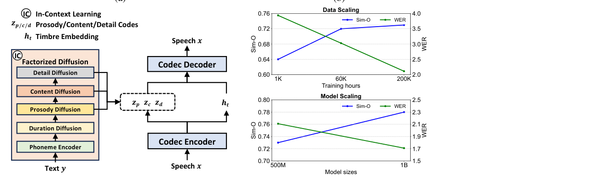
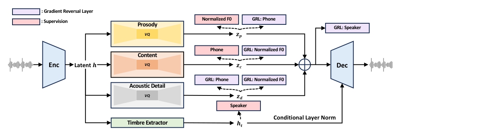
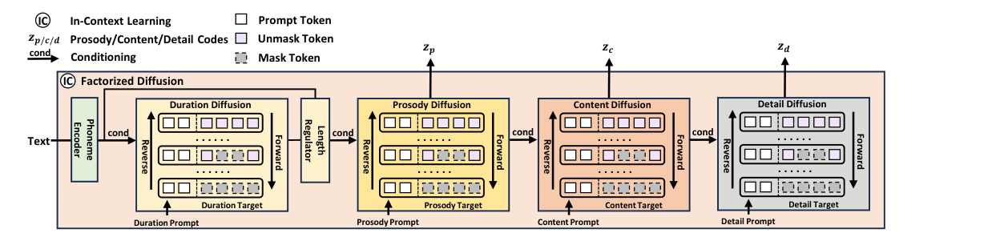

Zeqian Ju12∗, Yuancheng Wang3∗, Kai Shen41∗, Xu Tan1∗, Detai Xin15, Dongchao Yang1, Yanqing Liu1, Yichong Leng1, Kaitao Song1, Siliang Tang4, Zhizheng Wu3, Tao Qin1, Xiang-Yang Li2, Wei Ye6, Shikun Zhang6, Jiang Bian1, Lei He1, Jinyu Li1, Sheng Zhao1 1Microsoft Research & Microsoft Azure 2University of Science and Technology of China 3The Chinese University of Hong Kong, Shenzhen 4Zhejiang University, 5The University of Tokyo, 6Peking University https://aka.ms/speechresearch
摘要Abstract
While recent large-scale text-to-speech (TTS) models have achieved significant progress, they still fall short in speech quality, similarity, and prosody. Considering speech intricately encompasses various attributes (e.g., content, prosody, timbre, and acoustic details) that pose significant challenges for generation, a natural idea is to factorize speech into individual subspaces representing different attributes and generate them individually. Motivated by it, we propose NaturalSpeech 3, a TTS system with novel factorized diffusion models to generate natural speech in a zero-shot way. Specifically, 1) we design a neural codec with factorized vector quantization (FVQ) to disentangle speech waveform into subspaces of content, prosody, timbre, and acoustic details; 2) we propose a factorized diffusion model to generate attributes in each subspace following its corresponding prompt. With this factorization design, NaturalSpeech 3 can effectively and efficiently model intricate speech with disentangled subspaces in a divide-and-conquer way. Experiments show that NaturalSpeech 3 outperforms the state-of-the-art TTS systems on quality, similarity, prosody, and intelligibility, and achieves on-par quality with human recordings. Furthermore, we achieve better performance by scaling to 1B parameters and 200K hours of training data. (a) IC In-Context Learning
尽管近期的大规模文本转语音（TTS）模型已取得显著进展，但在语音质量、相似度和韵律上仍有不足。考虑到语音天然地包含多种属性（如内容、韵律、音色和声学细节），这给生成带来了巨大挑战；一个自然的思路是把语音分解为代表不同属性的若干子空间，并分别生成它们。受此启发，我们提出 NaturalSpeech 3：一个采用新型分解扩散模型、以零样本方式生成自然语音的 TTS 系统。具体来说：1）我们设计了带有分解向量量化（FVQ）的神经 codec，把语音波形解耦为内容、韵律、音色和声学细节四个子空间；2）我们提出分解扩散模型，在各子空间内依据对应的提示（prompt）生成属性。借助这种分解设计，NaturalSpeech 3 能以分而治之的方式，在解耦的子空间中高效地建模复杂语音。实验表明，NaturalSpeech 3 在质量、相似度、韵律和可懂度上超越现有 SOTA TTS 系统，并达到与真人录音相当的质量。此外，通过扩展到 1B 参数和 200K 小时训练数据，我们获得了更好的性能。(a) IC 上下文学习（In-Context Learning）
𝒛𝒑/𝒄/𝒅Prosody/Content/Detail Codes
韵律/内容/细节编码（Prosody/Content/Detail Codes）
𝒉𝒕Timbre Embedding Speech 𝒙 IC Factorized Diffusion Codec Decoder Detail Diffusion Content Diffusion
音色嵌入 语音 x IC 分解扩散 Codec 解码器 细节扩散 内容扩散
𝒛𝒑𝒛𝒄𝒛𝒅 𝒉𝒕Prosody Diffusion Duration Diffusion Codec Encoder Phoneme Encoder Speech 𝒙 Text 𝒚 (b) Data Scaling
（图 1 标签：Prosody Diffusion / Duration Diffusion / Codec Encoder / Phoneme Encoder；输入 Speech 𝒙 与 Text 𝒚；(b) Data Scaling。）
0.76 4.0Sim-O WER0.72 3.5Sim-O WER0.68 3.0 0.64 2.5 0.60 2.01K 60K 200K Training hours Model Scaling0.80 2.5Sim-O WER0.78 2.3 0.76 2.1Sim-O WER0.74 1.9 0.72 1.7 0.70 1.5500M 1B Model sizes
（图 1(b) 横轴：模型规模 500M / 1B。）

图Figure 1: (a) Overview of the system, with a neural speech codec for speech attribute factorization and a factorized diffusion model. (b) Data and model scaling of the system.
图 1：(a) 系统总览，包含用于语音属性分解的神经语音 codec 和一个分解扩散模型。(b) 系统的数据缩放与模型缩放。
∗The first four authors contributed equally to this work, and their names are listed in random order. Corresponding author: Xu Tan, xuta@microsoft.com Preprint. Work in progress.
∗前四位作者对本文贡献相同，姓名按随机顺序排列。通讯作者：Xu Tan，xuta@microsoft.com。预印本。工作仍在进行中。
1 引言Introduction
In recent years, significant advancements have been achieved in text-to-speech (TTS) synthesis. Traditional TTS systems [1, 2, 3, 4] are typically trained on limited datasets recorded in studios, and thus fail to support high-quality zero-shot speech synthesis. Recent works [5, 6, 7] have made considerable progress for zero-shot TTS by largely scaling up both the corpus and the model sizes. However, the synthesis results of these large-scale TTS systems are not satisfactory in terms of voice quality, similarity, and prosody.
近年来，文本转语音（TTS）合成取得了显著进展。传统 TTS 系统 [1, 2, 3, 4] 通常在录音棚录制的有限数据集上训练，因此无法支持高质量的零样本语音合成。近期工作 [5, 6, 7] 通过大幅扩大语料与模型规模，在零样本 TTS 上取得了长足进步。然而，这些大规模 TTS 系统的合成结果在音质、相似度和韵律上仍不尽如人意。
The challenges of inferior results stem from the intricate information embedded in speech, since speech encompasses numerous attributes, such as content, prosody, timbre, and acoustic detail. Previous works using raw waveform [8, 9] and mel-spectrogram [1, 2, 10, 7, 11] as data representations suffer from these intricate complexities during speech generation. A natural idea is to factorize speech into disentangled subspaces representing different attributes and generate them individually. However, achieving this kind of disentangled factorization is non-trivial. Previous works [12, 13, 6] encode speech into multi-level discrete tokens using a neural audio codec [14, 15] based on residual vector quantization (RVQ). Although this approach decomposes speech into different hierarchical representations, it does not effectively disentangle the information of different attributes of speech across different RVQ levels and still suffers from modeling complex coupled information.
结果欠佳的挑战源于语音中蕴含的复杂信息，因为语音包含众多属性，如内容、韵律、音色和声学细节。此前使用原始波形 [8, 9] 和 Mel 频谱图 [1, 2, 10, 7, 11] 作为数据表示的工作，在语音生成中都受制于这些错综复杂的耦合性。一个自然的思路是：把语音分解为若干代表不同属性的解耦子空间，再分别生成它们。然而，实现这种解耦分解并非易事。此前工作 [12, 13, 6] 借助基于残差向量量化（RVQ）的神经音频 codec [14, 15]，把语音编码为多层级离散 token。尽管该方法把语音分解为不同层级的表示，但它并不能在不同 RVQ 层级间有效解耦语音的不同属性信息，仍然要面对复杂耦合信息的建模难题。
To effectively generate speech with better quality, similarity and prosody, we propose a TTS system with novel factorized diffusion models to generate natural speech in a zero-shot way. Specifically, 1) we introduce a novel neural speech codec with factorized vector quantization (FVQ), named FACodec, to decompose speech waveform into distinct subspaces of content, prosody, timbre, and acoustic details and reconstruct speech waveform with these disentangled representations, leveraging information bottleneck [16, 17], various supervised losses, and adversarial training [18] to enhance disentanglement; 2) we propose a factorized diffusion model, which generates the factorized speech representations of duration, content, prosody, and acoustic detail, based on their corresponding prompts. This design allows us to use different prompts to control different attributes. The overview of our method, referred to NaturalSpeech 3, is shown in Figure 1.
为了以更好的质量、相似度和韵律生成语音，我们提出一个采用新型分解扩散模型、以零样本方式生成自然语音的 TTS 系统。具体来说：1）我们引入一个带分解向量量化（FVQ）的新型神经语音 codec，名为 FACodec，把语音波形分解为内容、韵律、音色和声学细节四个不同的子空间，并用这些解耦表示重构语音波形，其间利用信息瓶颈 [16, 17]、多种监督损失和对抗训练 [18] 来增强解耦；2）我们提出分解扩散模型，依据对应的提示（prompt）来生成时长、内容、韵律和声学细节这些被分解的语音表示。这一设计使我们能够用不同的提示来控制不同的属性。我们的方法——称为 NaturalSpeech 3——的总览见 Figure 1。
We decompose complex speech into subspaces representing different attributes, thus simplifying the modeling of speech representation. This approach offers several advantages: 1) our factorized diffusion model is able to learn these disentangled representations efficiently, resulting in higher quality speech generation; 2) by disentangling timbre information in our FACodec, we enable our factorized diffusion model to avoid directly modeling timbre. This reduces learning complexity and leads to improved zero-shot speech synthesis; 3) we can use different prompts to control different attributes, enhancing the controllability of NaturalSpeech 3.
我们把复杂语音分解为代表不同属性的子空间，从而简化了语音表示的建模。这一做法带来若干优势：1）我们的分解扩散模型能高效学习这些解耦表示，从而生成更高质量的语音；2）通过在 FACodec 中解耦音色信息，我们让分解扩散模型得以避开对音色的直接建模。这降低了学习难度，并带来更好的零样本语音合成；3）我们可以用不同的提示来控制不同属性，增强 NaturalSpeech 3 的可控性。
Benefiting from these designs, NaturalSpeech 3 has achieved significant improvements in speech quality, similarity, prosody, and intelligibility. Specifically, 1) it achieves comparable or better speech quality than the ground-truth speech on the LibriSpeech test set in terms of CMOS; 2) it achieves a new SOTA on the similarity between the synthesized speech and the prompt speech (0.64 →0.67 on Sim-O, 3.69 →4.01 on SMOS); 3) it shows a significant improvement in prosody compared to other TTS systems with −0.16 average MCD (lower is better), +0.21 SMOS; 4) it achieves a SOTA on intelligibility (1.94 →1.81 on WER); 5) it achieves human-level naturalness on multi-speaker datasets (e.g., LibriSpeech), another breakthrough after NaturalSpeech2. Furthermore, we demonstrate the scalability of NaturalSpeech 3 by scaling it to 1B parameters and 200K hours of training data. Audio samples can be found in https://speechresearch.github.io/naturalspeech3.
得益于这些设计，NaturalSpeech 3 在语音质量、相似度、韵律和可懂度上都取得了显著提升。具体来说：1）在 CMOS 上，它取得与 LibriSpeech 测试集真值语音相当甚至更好的音质；2）它在合成语音与提示语音的相似度上取得新 SOTA（Sim-O 0.64 →0.67，SMOS 3.69 →4.01）；3）与其他 TTS 系统相比，它在韵律上有显著提升（平均 MCD −0.16（越低越好），SMOS +0.21）；4）它在可懂度上取得 SOTA（WER 1.94 →1.81）；5）它在多说话人数据集（如 LibriSpeech）上达到人类水平的自然度，这是继 NaturalSpeech 2 之后的又一突破。此外，我们通过把 NaturalSpeech 3 扩展到 1B 参数和 200K 小时训练数据，展示了它的可扩展性。音频样例见 https://speechresearch.github.io/naturalspeech3。
2 背景Background
In this section, we discuss the recent progress in TTS including: 1) zero-shot TTS; 2) speech representations in TTS; 3) generation methods in TTS; 4) speech attribute disentanglement.
本节讨论 TTS 的近期进展，包括：1）零样本 TTS；2）TTS 中的语音表示；3）TTS 中的生成方法；4）语音属性解耦。
Zero-shot TTS. Zero-shot TTS aims to synthesize speech for unseen speakers with speech prompts. We can systematically categorize these systems into four groups based on data representation and modelling methods: 1) Discrete Tokens + Autoregressive [6, 19, 20]; 2) Discrete Tokens + Non2While NaturalSpeech 1 [4] achieved human-level quality on the single-speaker LJSpeech dataset, NaturalSpeech 3 achieved human-level quality on the diverse multi-speaker LibriSpeech dataset for the first time. autoregressive [13, 21, 22]; 3) Continuous Vectors + Autoregressive [23]; 4) Continuous Vectors + Non-autoregressive [5, 11, 24, 25]. Discrete tokens are typically derived from neural codec, while continuous vectors are generally obtained from mel-spectrogram or latents from audio autoencoder or codec. In addition to the aforementioned perspectives, we disentangle speech waveforms into subspaces based on attribute disentanglement and propose a factorized diffusion model to generate attributes within each subspace, motivated by the principle of divide-and-conquer. Meanwhile, we can reuse previous methods, employing discrete tokens along with autoregressive models.
零样本 TTS。零样本 TTS 的目标是：凭借语音提示，为未见过的说话人合成语音。我们可以按数据表示与建模方法，把这些系统系统地归为四类：1）离散 token + 自回归 [6, 19, 20]；2）离散 token + 非自回归 [13, 21, 22]（原文此处混入了脚注 2 的文字：NaturalSpeech 1 [4] 在单说话人 LJSpeech 数据集上达到人类水平质量，而 NaturalSpeech 3 首次在多样化的多说话人 LibriSpeech 数据集上达到人类水平质量）；3）连续向量 + 自回归 [23]；4）连续向量 + 非自回归 [5, 11, 24, 25]。离散 token 通常来自神经 codec，而连续向量一般取自 Mel 频谱图，或音频自编码器/codec 的隐变量。除了上述视角之外，我们基于属性解耦把语音波形分解为子空间，并提出分解扩散模型在各子空间内生成属性，其动机正是分而治之的原则。与此同时，我们也可以复用此前的方法，即把离散 token 与自回归模型搭配使用。
Speech Representations in TTS. Traditional works propose using prior-based speech representation such as raw waveform [26, 27, 28] or mel-spectrogram [29, 30, 3, 31]. Recently, large-scale TTS systems [6, 13, 5] leverage data-driven representation, i.e., either discrete tokens or continuous vectors form an auto-encoder [14, 15, 32]. However, these methods ignore that speech contains various complex attributes and encounter intricate complexities during speech generation. In this paper, we factorize speech into individual subspaces representing different attributes which can be effectively and efficiently modeled.
TTS 中的语音表示。传统工作主张使用基于先验的语音表示，如原始波形 [26, 27, 28] 或 Mel 频谱图 [29, 30, 3, 31]。近期的大规模 TTS 系统 [6, 13, 5] 则采用数据驱动的表示，即从自编码器 [14, 15, 32] 得到的离散 token 或连续向量。然而，这些方法忽视了语音包含多种复杂属性这一事实，在生成时遭遇错综复杂的耦合难题。本文把语音分解为代表不同属性的独立子空间，这些子空间可以被高效且有效地建模。
Generation Methods in TTS. Previous works have demonstrated that NAR-based models [3, 33, 34, 7, 5, 11] enjoy better robustness and generation speed than AR-based models, because they explicitly model the duration and predict all features simultaneously. Instead, AR-based models [2, 30, 6, 23, 35] have better diversity, prosody, expressiveness, and flexibility than NAR-based models, due to their implicitly duration modeling and token sampling strategy. In this study, we adopt the NAR modeling approach and propose a factorized diffusion model to support our disentangled speech representations and also extend it to AR modeling approaches. This allows NaturalSpeech 3 to achieve better expressiveness while maintaining stability and generation speed.
TTS 中的生成方法。此前工作表明，基于 NAR 的模型 [3, 33, 34, 7, 5, 11] 比基于 AR 的模型具有更好的鲁棒性和生成速度，因为它们显式建模时长并同时预测所有特征。相反，基于 AR 的模型 [2, 30, 6, 23, 35] 在多样性、韵律、表现力和灵活性上优于 NAR 模型，这得益于其隐式时长建模与 token 采样策略。本研究采用 NAR 建模路线，提出分解扩散模型来支撑我们解耦的语音表示，同时也将该框架扩展到 AR 建模路线。这使 NaturalSpeech 3 在保持稳定性和生成速度的同时，获得更好的表现力。
Speech Attribute Disentanglement. Prior works [36, 37, 38] utilize disentangled representation for speech generation, such as speech content from self-supervised pre-trained models [39, 40, 41], fundamental frequency, and timbre, but speech quality is not satisfying. Recently, some works explore attribute disentanglement in neural speech codec. SpeechTokenizer [42] uses HuBERT [43] for semantic distillation, aiming to render the first-layer RVQ representation as semantic information. Disen-TF-Codec [44] proposes the disentanglement with content and timbre representation, and applies them for zero-shot voice conversion. In this paper, we achieve better disentanglement with more speech attributes including content, prosody, acoustic details and timbre while ensuring highquality reconstruction. We validate such disentanglement can bring about significant improvements in zero-shot TTS task.
语音属性解耦。此前工作 [36, 37, 38] 利用解耦表示做语音生成，如取自自监督预训练模型 [39, 40, 41] 的语音内容、基频和音色，但语音质量并不令人满意。近期，一些工作开始探索在神经语音 codec 中做属性解耦。SpeechTokenizer [42] 使用 HuBERT [43] 做语义蒸馏，试图让第一层 RVQ 表示承载语义信息。Disen-TF-Codec [44] 提出内容与音色表示的解耦，并将其用于零样本语音转换。本文在保证高质量重构的同时，实现了覆盖更多语音属性（内容、韵律、声学细节和音色）的更好解耦。我们验证了这种解耦能为零样本 TTS 任务带来显著改进。
3 NaturalSpeech 3NaturalSpeech 3
3.1 整体架构Overall Architecture
In this section, we present NaturalSpeech 3, a cutting-edge system for natural and zero-shot textto-speech synthesis with better speech quality, similarity and controllability. As shown in Figure 1, NaturalSpeech 3 consists of 1) a neural speech codec (i.e., FACodec) for attribute disentanglement; 2) a factorized diffusion model which generates factorized speech attributes. Since the speech waveform is complex and intricately encompasses various attributes, we factorize speech into five attributes including: duration, prosody, content, acoustic details, and timbre. Specifically, although the duration can be regarded as an aspect of prosody, we choose to model it explicitly due to our non-autoregressive speech generation design. We use our internal alignment tool to alignment speech and phoneme and obtain phoneme-level duration. For other attributes, we implicitly utilize the factorized neural speech codec to learn disentangled speech attribute subspaces (i.e., content, prosody, acoustic details, and timbre). Then, we use the factorized diffusion model to generate each speech attribute representation. Finally, we employ the codec decoder to reconstruct the waveform with the generated speech attributes. We introduce the FACodec in Section 3.2 and the factorized diffusion model in Section 3.3.
本节介绍 NaturalSpeech 3：一个前沿的自然、零样本 TTS 合成系统，具有更好的语音质量、相似度和可控性。如 Figure 1 所示，NaturalSpeech 3 由两部分组成：1）用于属性解耦的神经语音 codec（即 FACodec）；2）生成分解语音属性的分解扩散模型。由于语音波形复杂、天然地蕴含多种属性，我们把语音分解为五种属性：时长、韵律、内容、声学细节和音色。具体来说，尽管时长可以视为韵律的一个方面，但由于我们采用非自回归的语音生成设计，仍选择对其进行显式建模。我们使用内部对齐工具对语音与音素做对齐，得到音素级时长。对于其他属性，我们隐式地利用分解式神经语音 codec 来学习解耦的语音属性子空间（即内容、韵律、声学细节和音色）。随后，我们用分解扩散模型生成各语音属性的表示。最后，我们用 codec 解码器把生成的语音属性重构为波形。我们将在 Section 3.2 介绍 FACodec，在 Section 3.3 介绍分解扩散模型。
: Gradient Reversal Layer : Supervision Prosody VQ Content Normalized F0 GRL: Phone GRL: Speaker
（此为图 2 的标注抽取碎块）：梯度反转层（GRL）：监督；韵律 VQ、内容 VQ；归一化 F0；GRL：音素；GRL：说话人。
𝒛𝒑Phone GRL: Normalized F0 Latent 𝒉 Enc Dec VQ Acoustic Detail VQ
（此为图 2 的标注抽取碎块）：GRL：音素；GRL：归一化 F0；隐变量 h；编码器、解码器；声学细节 VQ。
𝒛𝒄GRL: Phone GRL: Normalized F0
（此为图 2 的标注抽取碎块）：GRL：音素；GRL：归一化 F0。
𝒛𝒅Speaker Timbre Extractor
（此为图 2 的标注抽取碎块）：说话人音色提取器 音色嵌入 ht 条件层归一化（Conditional Layer Norm）。
𝒉𝒕Conditional Layer Norm
（此为图 2 的标注抽取碎块）：说话人音色提取器 音色嵌入 ht 条件层归一化（Conditional Layer Norm）。

图Figure 2: The framework of the FACodec for attribute factorization.
图 2：用于属性分解的 FACodec 框架。
3.2 用于属性分解的 FACodecFACodec for Attribute Factorization
3.2.1 FACodec 模型总览FACodec Model Overview
We propose a factorized neural speech codec (i.e., FACodec3) to convert complex speech waveform into disentangled subspaces representing speech attributes of content, prosody, timbre, and acoustic details and reconstruct high-quality speech waveform from these.
我们提出分解式神经语音 codec（即 FACodec，脚注 3 给出了其代码与预训练 checkpoint 的开源地址），把复杂语音波形转换为代表内容、韵律、音色和声学细节等语音属性的解耦子空间，并从这些表示重构高质量语音波形。
As shown in Figure 2, our FACodec consists of a speech encoder, a timbre extractor, three factorized vector quantizers (FVQ) for content, prosody, acoustic detail, and a speech decoder. Given a speech x, 1) following [14, 5], we adopt several convolutional blocks for the speech encoder with a downsample rate of 200 for 16KHz speech data (i.e., each frame corresponding to a 12.5ms speech segment) to obtain pre-quantization latent h; 2) the timbre extractor is a Transformer encoder which converts the output of the speech encoder h into a global vector ht representing the timbre attributes; 3) for other attribute i (i = p, c, d for prosody, content, and acoustic detail, respectively), we use a factorized vector quantizer (FVQi) to capture fine-grained speech attribute representation and obtain corresponding discrete tokens; 4) the speech decoder mirrors the structure of speech encoder but with much larger parameter amount to ensure high-quality speech reconstruction. We first add the representation of prosody, content, and acoustic details together and then fuse the timbre information by conditional layer normalization [45] to obtain the input z for the speech decoder. We discuss how to achieve better speech attribute disentanglement in the next section.
如 Figure 2 所示，我们的 FACodec 由一个语音编码器、一个音色提取器、三个分别用于内容、韵律、声学细节的分解向量量化器（FVQ），以及一个语音解码器组成。给定语音 x：1）沿用 [14, 5]，语音编码器采用若干卷积块，对 16KHz 语音做 200 倍下采样（即每帧对应 12.5ms 的语音片段），得到量化前隐变量 h；2）音色提取器是一个 Transformer 编码器，把语音编码器的输出 h 转换为代表音色属性的全局向量 ht；3）对于其他属性 i（i = p、c、d 分别对应韵律、内容和声学细节），我们用一个分解向量量化器（FVQi）捕捉细粒度的语音属性表示，得到对应的离散 token；4）语音解码器与语音编码器结构镜像，但参数量大得多，以保证高质量的语音重构。我们先把韵律、内容、声学细节的表示相加，再通过条件层归一化 [45] 融合音色信息，得到语音解码器的输入 z。下一节讨论如何实现更好的语音属性解耦。
3.2.2 属性解耦Attribute Disentanglement
Directly factorizing speech into different subspaces does not guarantee the disentanglement of speech. In this section, we introduce some techniques to achieve better speech attribute disentanglement: 1) information bottleneck, 2) supervision, 3) gradient reverse, and 4) detail dropout. Please refer to Appendix B.1 for more training details.
仅仅把语音直接分解到不同子空间，并不能保证语音的解耦。本节介绍实现更好语音属性解耦的若干技术：1）信息瓶颈；2）监督；3）梯度反转；4）细节 dropout。更多训练细节见 Appendix B.1。
Information Bottleneck. Inspired by [16, 17], to force the model to remove unnecessary information (such as prosody in content subspace), we construct the information bottleneck in prosody, content, and acoustic details FVQ by projecting the encoder output into a low-dimensional space (i.e., 8- dimension) and subsequently quantize within this low-dimensional space. This technique ensures that each code embedding contains less information, facilitating information disentanglement [32, 46]. After quantization, we will project the quantized vector back to original dimension.
信息瓶颈。受 [16, 17] 启发，为迫使模型移除不必要的信息（如内容子空间中的韵律），我们在韵律、内容和声学细节三个 FVQ 中构造信息瓶颈：先把编码器输出投影到低维空间（即 8 维），再在该低维空间内量化。该技术确保每个码本嵌入承载更少的信息，从而促进信息解耦 [32, 46]。量化之后，我们再把量化向量投影回原始维度。
Supervision. To achieve high-quality speech disentanglement, we introduce supervision as auxiliary task for each attribute. For prosody, since pitch is an important part of prosody [37], we take the post-quantization latent zp to predict pitch information. We extract the F0 for each frame and use normalized F0 (z-score) as the target. For content, we directly use the phoneme labels as the target (we use our internal alignment tool to get the frame-level phoneme labels). For timbre, we apply speaker classification on ht by predicting the speaker ID.
监督。为实现高质量的语音解耦，我们为每个属性引入监督作为辅助任务。对于韵律，由于音高是韵律的重要组成部分 [37]，我们用量化后隐变量 zp 来预测音高信息。我们对每帧提取 F0，并以归一化 F0（z-score）作为目标。对于内容，我们直接使用音素标签作为目标（帧级音素标签由内部对齐工具得到）。对于音色，我们在 ht 上做说话人分类，即预测说话人 ID。
Gradient Reversal. Avoiding the information leak (such as the prosody leak in content) can enhance disentanglement. Inspired by [47], we adopt adversarial classifier with the gradient reversal layer 3We release the code and pre-trained checkpoint of FACodec at https://huggingface.co/spaces/ amphion/naturalspeech3_facodec.
梯度反转。避免信息泄漏（如韵律泄漏进内容）可以增强解耦。受 [47] 启发，我们采用带梯度反转层的对抗分类器（脚注 3：我们在 https://huggingface.co/spaces/amphion/naturalspeech3_facodec 开源了 FACodec 的代码与预训练 checkpoint）。
Prompt Token IC In-Context Learning Prosody/Content/Detail Codes
韵律/内容/细节编码（Prosody/Content/Detail Codes）
𝒛𝒑/𝒄/𝒅Unmask Token𝒛𝒑Conditioning cond Mask Token Factorized Diffusion IC Prosody Diffusion Duration Diffusion Phoneme Encoder Length Regulator cond cond
韵律/内容/细节编码（Prosody/Content/Detail Codes）
. . . . . .. . . . . .Forward Text Reverse Reverse
（图内标签：Forward / Text / Reverse / Reverse。）
. . . . . .. . . . . .Prosody Target Duration Target Prosody Prompt Duration Prompt
（此为图 3 的标注抽取碎块）：提示 token、IC 上下文学习（In-Context Learning）、韵律/内容/细节编码 zp/c/d、Unmask token、zp 条件化、Mask token、分解扩散、IC、韵律扩散、时长扩散、音素编码器、长度调节器、前向、文本、反向、反向、韵律目标、时长目标、韵律提示、时长提示。
𝒛𝒄 𝒛𝒅Detail Diffusion Content Diffusion
音色嵌入 语音 x IC 分解扩散 Codec 解码器 细节扩散 内容扩散
. . . . . .cond cond. . . . . .Forward Forward Forward Reverse Reverse
（图内标签：Forward / Forward / Forward / Reverse / Reverse。）
. . . . . .. . . . . .Detail Target Content Target Detail Prompt Content Prompt
（此为图 3 的标注抽取碎块）：细节扩散、内容扩散、前向、前向、前向、反向、反向、细节目标、内容目标、细节提示、内容提示。

图Figure 3: The framework of factorized diffusion model, which consists of 1) phoneme encoder, 2) duration diffusion and length regulator, 3) prosody diffusion, 4) content diffusion, 5) detail (acoustic detail) diffusion. Note that modules 2-5 share the same diffusion formulation.
图 3：分解扩散模型的框架，包含：1）音素编码器；2）时长扩散与长度调节器；3）韵律扩散；4）内容扩散；5）细节（声学细节）扩散。注意模块 2–5 共享同一种扩散建模形式。
(GRL) [48] to eliminate undesired information in latent space. Specifically, for prosody, we apply phoneme-GRL (i.e., GRL layer by predicting phoneme labels) to eliminate content information; for content, since the pitch is an important aspect of prosody, we apply F0-GRL to reduce the prosody information for simplicity; for acoustic details, we apply both phoneme-GRL and F0-GRL to eliminate both content and prosody information. In addition, we apply speaker-GRL on the sum of zp, zc, zd to eliminate timbre.
（GRL）[48]，用以消除隐空间中不该存在的信息。具体来说：对于韵律，我们施加音素 GRL（即通过预测音素标签的 GRL 层）来消除内容信息；对于内容，由于音高是韵律的重要方面，为简单起见我们施加 F0-GRL 来减少韵律信息；对于声学细节，我们同时施加音素 GRL 与 F0-GRL，以消除内容与韵律信息。此外，我们在 zp、zc、zd 三者之和上施加说话人 GRL，以消除音色。
Detail Dropout. We have the following considerations: 1) empirically, we find that the codec tends to preserve undesired information (e.g., content, prosody) in acoustic details subspace since there is no supervision; 2) intuitively, without acoustic details, the decoder should reconstruct speech only with prosody, content and timbre, although in low-quality. Motivated by them, we design the detail dropout by randomly masking out zd during the training process with probability p. With detail dropout, we achieve the trade-off of disentanglement and reconstruction quality: 1) the codec can fully utilize the prosody, content and timbre information to reconstruct the speech to ensure the decouple ability, although in low-quality; 2) we can obtain high-quality speech when the acoustic details are given.
细节 dropout。我们有如下考虑：1）经验上，我们发现 codec 倾向于在声学细节子空间中保留不该有的信息（如内容、韵律），因为该子空间没有监督；2）直觉上，即使没有声学细节，解码器也应当仅凭韵律、内容和音色重构出语音——尽管质量较低。受此启发，我们设计了细节 dropout：训练时以概率 p 随机屏蔽 zd。借助细节 dropout，我们在解耦与重构质量之间取得折中：1）codec 能充分利用韵律、内容和音色信息来重构语音以保证解耦能力，尽管此时质量较低；2）当给定声学细节时，我们又能获得高质量语音。
3.3 分解扩散模型Factorized Diffusion Model
3.3.1 模型总览Model Overview
We generate speech with discrete diffusion for better generation quality. We have the following considerations: 1) we factorize speech into the following attributes: duration, prosody, content, and acoustic details, and generate them in sequential with specific conditions. Firstly, as we mentioned in Section 3.1, due to our non-autoregressive generation design, we first generate duration. Secondly, intuitively, the acoustic details should be generated at last; 2) following the speech factorization design, we only provide the generative model with the corresponding attribute prompt and apply discrete diffusion in its subspace; 3) to facilitate in-context learning in diffusion model, we utilize the codec to factorize speech prompt into attribute prompts (i.e., content, prosody and acoustic details prompt) and generate the target speech attribute with partial noising mechanism following [49, 13]. For example, for prosody generation, we directly concatenate prosody prompt (without noise) and target sequence (with noise) and gradually remove noise from target sequence with prosody prompt.
我们采用离散扩散来生成语音，以获得更好的生成质量。我们的考虑如下：1）我们把语音分解为以下属性：时长、韵律、内容和声学细节，并按特定条件依次生成它们。首先，如 Section 3.1 所述，由于我们采用非自回归生成设计，需要先生成时长。其次，直觉上声学细节应当最后生成；2）遵循语音分解设计，我们只向生成模型提供对应属性的提示，并在其子空间内施加离散扩散；3）为促进扩散模型中的上下文学习，我们利用 codec 把语音提示分解为各属性提示（即内容、韵律和声学细节提示），并沿用 [49, 13] 的部分加噪机制来生成目标语音属性。例如，对于韵律生成，我们直接拼接韵律提示（不加噪）与目标序列（加噪），并在韵律提示的条件下逐步去除目标序列中的噪声。
With these thoughts, as shown in Figure 3, we present our factorized diffusion model, which consists of a phoneme encoder and speech attribute (i.e., duration, prosody, content, and acoustic details) diffusion modules with the same discrete diffusion formulation: 1) we generate the speech duration by applying duration diffusion with duration prompt and phoneme-level textural condition encoded by phoneme encoder. Then we apply the length regulator to obtain frame-level phoneme condition cph; 2) we generate prosody zp with prosody prompt and phoneme condition cph; 3) we generate content prosody zc with content prompt and use generated prosody zp and phoneme cph as conditions; 4) we generate acoustic details zd with acoustic details prompt and use generated prosody, content and phoneme zp, zc, cph as conditions. Specifically, we do not explicitly generate the timbre attribute. Due to the factorization design in our FACodec, we can obtain timbre from the prompt directly and do not need to generate it. Finally, we synthesize the target speech by combining attributes zp, zc, zd and ht and decoding it with codec decoder. We discuss the diffusion formulation in Section 3.3.2.
基于这些想法，如 Figure 3 所示，我们提出分解扩散模型：它由一个音素编码器和若干语音属性（即时长、韵律、内容和声学细节）扩散模块组成，各模块共享同一种离散扩散建模形式：1）我们用时长扩散生成语音时长，条件是时长提示和由音素编码器编码的音素级文本条件。随后用长度调节器得到帧级音素条件 cph；2）以韵律提示和音素条件 cph 生成韵律 zp；3）以内容提示生成内容 zc（原文误作 content prosody），并以生成的韵律 zp 和音素 cph 作为条件；4）以声学细节提示生成声学细节 zd，并以生成的韵律、内容和音素 zp、zc、cph 作为条件。具体来说，我们并不显式生成音色属性。由于 FACodec 中的分解设计，我们可以直接从提示中取得音色，无需生成它。最后，我们组合属性 zp、zc、zd 与 ht，并用 codec 解码器解码，合成目标语音。扩散建模形式将在 Section 3.3.2 讨论。
3.3.2 扩散建模形式Diffusion Formulation
Forward Process. Denote X = [xi]N i=1 the target discrete token sequence, where N is the sequence length, Xp is the prompt discrete token sequence, and C is the condition. The forward process at time t is defined as masking a subset of tokens in X with the corresponding binary mask Mt = [mt,i]N i=1, formulated as Xt = X⊙Mt, by replacing xi with [MASK] token if mt,i = 1, and otherwise leaving xi unmasked if mt,i = 0. mt,i iid ∼Bernoulli(σ(t)) and σ(t) ∈(0, 1] is a monotonically increasing function. In this paper, σ(t) = sin( πt 2T ), t ∈(0, T]. Specially, we denote X0 = X for the original token sequence and XT for the fully masked sequence.
前向过程。记目标离散 token 序列为 X = [xi]N i=1，其中 N 为序列长度，Xp 为提示离散 token 序列，C 为条件。时刻 t 的前向过程定义为：用对应的二值掩码 Mt = [mt,i]N i=1 遮盖 X 中的一个 token 子集，形式化为 Xt = X⊙Mt——若 mt,i = 1 则用 [MASK] token 替换 xi，若 mt,i = 0 则保持 xi 不变。mt,i iid ∼Bernoulli(σ(t))，其中 σ(t) ∈(0, 1] 是单调递增函数。本文取 σ(t) = sin( πt 2T )，t ∈(0, T]（此处为公式 σ(t)=sin(πt/2T) 的抽取形式）。特别地，记 X0 = X 为原始 token 序列，XT 为完全遮盖的序列。
Reverse Process. The reverse process gradually restores X0 by sampling from reverse distribution q(Xt−∆t|X0, Xt), starting from full masked sequence XT . Since X0 is unavailable in inference, we use the diffusion model pθ, parameterized by θ, to predict the masked tokens conditioned on Xp and C, denoted as pθ(X0|Xt, Xp, C). The parameters θ are optimized to minimize the negative log-likelihood of the masked tokens:
反向过程。反向过程从完全遮盖的序列 XT 出发，通过从反向分布 q(Xt−∆t|X0, Xt) 中采样，逐步还原 X0。由于推理时 X0 不可得，我们用参数化为 θ 的扩散模型 pθ，在 Xp 和 C 的条件下预测被遮盖的 token，记作 pθ(X0|Xt, Xp, C)。参数 θ 的优化目标是最小化被遮盖 token 的负对数似然：
Lmask = E X∈D,t∈[0,T ] −
Lmask = E X∈D,t∈[0,T ] −（后接公式块，为遮盖 token 的负对数似然期望）。
N Xi=1 mt,i · log(pθ(xi|Xt, Xp, C)).Then we can get the reverse transition distribution: p(Xt−∆t|Xt, Xp, C) = E
于是可以得到反向转移分布：p(Xt−∆t|Xt, Xp, C) = E ˆ X0∼pθ(X0|Xt,Xp,C) q(Xt−∆t| ˆX0, Xt)。
ˆX0∼pθ(X0|Xt,Xp,C) q(Xt−∆t| ˆX0, Xt).
于是可以得到反向转移分布：p(Xt−∆t|Xt, Xp, C) = E ˆ X0∼pθ(X0|Xt,Xp,C) q(Xt−∆t| ˆX0, Xt)。
Inference. During inference, we progressively replace masked tokens, starting from the fully masked sequence XT , by iteratively sampling from p(Xt−∆t|Xt, Xp, C). Inspire by [50, 51, 52], we first sample ˆX0 from pθ(X0|Xt, Xp, C), and then sample Xt−∆t from q(Xt−∆t|ˆX0, Xt), which involves remask ⌊N · σ(t −∆t)⌋tokens in ˆX0 with the lowest confidence score, where we define the confidence score of ˆxi in ˆX0 to pθ(ˆxi|Xt, Xp, C) if mt,i = 1, otherwise, we set confidence score of xi to 1, which means that tokens already unmasked in Xt will not be remasked.
推理。推理时，从完全遮盖的序列 XT 出发，通过迭代地从 p(Xt−∆t|Xt, Xp, C) 中采样，逐步替换被遮盖的 token。受 [50, 51, 52] 启发，我们先从 pθ(X0|Xt, Xp, C) 采样 ˆX0，再从 q(Xt−∆t|ˆX0, Xt) 采样 Xt−∆t——这一步会在 ˆX0 中重新遮盖置信度最低的 ⌊N · σ(t −∆t)⌋ 个 token；其中 ˆX0 中 ˆxi 的置信度定义为 pθ(ˆxi|Xt, Xp, C)（当 mt,i = 1），否则把 xi 的置信度置为 1，意味着在 Xt 中已被揭开的 token 不会被重新遮盖。
Classifier-free Guidance. Moreover, we adapt the classifier-free guidance technique [53, 54]. Specifically, in training, we do not use the prompt with a probability of pcfg = 0.15. In inference, we extrapolate the model output towards the conditional generation guided by the prompt gcond = g(X|Xp) and away from the unconditional generation guncond = g(X), i.e., gcfg = gcond +α·(gcond − guncond), with a guidance scale α selected based on experimental results. We then rescale it through gfinal = std(gcond) × gcfg/std(gcfg), following [55].
无分类器引导（classifier-free guidance）。此外，我们采用了无分类器引导技术 [53, 54]。具体来说，训练时以概率 pcfg = 0.15 不使用提示。推理时，我们让模型输出朝由提示引导的条件生成 gcond = g(X|Xp) 方向外推、远离无条件生成 guncond = g(X)，即 gcfg = gcond +α·(gcond − guncond)，引导强度 α 依据实验结果选取。随后我们沿用 [55]，按 gfinal = std(gcond) × gcfg/std(gcfg) 对其进行重标定。
3.4 与 NaturalSpeech 系列的联系Connections to the NaturalSpeech Series
NaturalSpeech 3 is an advanced TTS system of the NaturalSpeech series. Compared with the previous versions NaturalSpeech [4] and NaturalSpeech 2 [5], NaturalSpeech 3 has the following connections and distinctions:
NaturalSpeech 3 是 NaturalSpeech 系列的进阶 TTS 系统。与此前的 NaturalSpeech [4] 和 NaturalSpeech 2 [5] 相比，NaturalSpeech 3 有如下联系与区别：
• Goal. The NaturalSpeech series aims to generate natural speech with high quality and diversity.
• 目标。NaturalSpeech 系列的目标是生成高质量、高多样性的自然语音。
We approach this goal in several stages: 1) Achieving high-quality speech synthesis in singlespeaker scenarios. To this end, NaturalSpeech [4] generates speech with quality on par with human recordings and only tackles single-speaker recording-studio datasets (e.g., LJSpeech). 2) Achieving high-quality and diverse speech synthesis on multi-style, multi-speaker, and multi-lingual scenarios. NaturalSpeech 2 [5] firstly focuses on speech diversity by exploring the zero-shot synthesis ability based on large-scale, multi-speaker, and in-the-wild datasets. Furthermore, NaturalSpeech 3 further achieves human-level naturalness on the multi-speaker dataset (e.g., LibriSpeech). • Architecture. The NaturalSpeech series shares the basic components such as encoder/decoder for waveform reconstruction and duration prediction for non-autoregressive speech generation.
我们分几个阶段逼近这一目标：1）在单说话人场景下实现高质量语音合成。为此，NaturalSpeech [4] 生成了与真人录音质量相当的语音，但只处理单说话人录音棚数据集（如 LJSpeech）；2）在多风格、多说话人、多语言场景下实现高质量、高多样性的语音合成。NaturalSpeech 2 [5] 首先关注语音多样性，基于大规模、多说话人、真实场景（in-the-wild）数据探索零样本合成能力。进一步地，NaturalSpeech 3 在多说话人数据集（如 LibriSpeech）上达到了人类水平的自然度。• 架构。NaturalSpeech 系列共享一些基础组件，如用于波形重构的编码器/解码器、用于非自回归语音生成的时长预测。
Different from NaturalSpeech which utilizes flow-based generative models and NaturalSpeech 2 which leverages latent diffusion models, NaturalSpeech 3 proposes the concept of factorized diffusion models to generate each factorized speech attribute in a divide-and-conquer way. • Speech Representations. Due to the complexity of speech waveform, the NaturalSpeech series uses an encoder/decoder to obtain speech latent for high-quality speech synthesis. NaturalSpeech utilizes naive VAE-based continuous representations, NaturalSpeech 2 leverages the continuous representations from the neural audio codec with residual vector quantizers, while NaturalSpeech 3 proposes a novel FACodec to convert complex speech signal into disentangled subspaces (i.e., prosody, content, acoustic details, and timbre) and reduces the speech modeling complexity.
不同于使用流式生成模型（flow-based）的 NaturalSpeech 和使用潜空间扩散模型的 NaturalSpeech 2，NaturalSpeech 3 提出分解扩散模型的概念，以分而治之的方式生成每个分解后的语音属性。• 语音表示。由于语音波形的复杂性，NaturalSpeech 系列使用编码器/解码器获得语音隐变量，以支撑高质量语音合成。NaturalSpeech 使用朴素的基于 VAE 的连续表示，NaturalSpeech 2 利用带残差向量量化器的神经音频 codec 的连续表示，而 NaturalSpeech 3 提出新型 FACodec，把复杂语音信号转换到解耦的子空间（即韵律、内容、声学细节和音色），从而降低语音建模的复杂度。
4 实验与结果Experiments and Results
4.1 实验设置Experimental Settings
In this subsection, we introduce the training, inference and evaluation for the Factorized Diffusion Model. Please refer to Appendix A.1 for model configuration.
本小节介绍分解扩散模型的训练、推理与评测。模型配置见 Appendix A.1。
Implementation Details. We use Librilight [56], which contains 60K hours of 16KHz unlabeled speech data and around 7000 distinct speakers from LibriVox audiobooks, as the training set. In duration diffusion, we further improve the performance by conditioning phoneme-level prosody codes. Specifically, we perform phoneme-level pooling according to duration on the pre-quantized vectors, and then feed these phoneme-level representations into the prosody quantizer in our codec to obtain the phoneme-level prosody codes. We employ an additional discrete diffusion to generate these in inference. We perform 4 iterations in each diffusion process. We generate duration without classifier-free guidance and generate others with a classifier-free guidance scale of 1.0. This strategy
实现细节。我们使用 Librilight [56] 作为训练集，它包含 60K 小时 16KHz 无标注语音数据，来自 LibriVox 有声书，约 7000 个不同说话人。在时长扩散中，我们通过引入音素级韵律编码作为条件来进一步提升性能。具体来说，我们按时长对量化前向量做音素级池化，再把这些音素级表示送入 codec 中的韵律量化器，得到音素级韵律编码。推理时，我们用一个额外的离散扩散来生成这些编码。每个扩散过程执行 4 次迭代。时长生成不使用无分类器引导，其余生成的无分类器引导强度为 1.0。该策略对应：音素级韵律为 4 × 2，时长为 4，韵律、内容和声学细节各 token 序列为 4 × 2；由于无分类器引导需要双倍计算，合计 60 次前向传播。
results in 4 × 2 for phoneme-level prosody, 4 for duration, 4 × 2 for each token sequence of prosody,content, and acoustic details, totaling 60 forward passes due to the double computation with classifierfree guidance. Please refer to Appendix B.1 for details of the FACodec and Appendix A.2 for more details of our factorization diffusion model.
该策略对应：音素级韵律为 4 × 2，时长为 4，韵律、内容和声学细节各 token 序列为 4 × 2；由于无分类器引导需要双倍计算，合计 60 次前向传播。FACodec 的细节见 Appendix B.1，分解扩散模型的更多细节见 Appendix A.2。
Evaluation Dataset. We employ two benchmark datasets: 1) LibriSpeech [57] test-clean, a widelyused testset for zero-shot TTS task. It contains 40 distinct speakers and 5.4-hour speech. Following [5], we randomly select one sentence for each speaker for LibriSpeech test-clean benchmark. Specifically, we randomly select 3-second clips as prompts from the same speaker’s speech. 2) RAVDESS [58], an emotional TTS dataset featuring 24 professional actors (12 female, 12 male) across 8 emotions (neutral, calm, happy, sad, angry, fearful, surprise, and disgust) in 2 emotional intensity (normal and strong). We use strong-intensity samples for RAVDESS benchmark. We adopt this benchmark for prosody evaluation, considering 1) for the same speaker, speech with the same emotion shares similar prosody, while speech with different emotions displays varied prosodies; 2) the benchmark provides speech samples with the same text from the same speaker across eight different emotions.
评测数据集。我们采用两个基准数据集：1）LibriSpeech [57] test-clean，零样本 TTS 任务广泛使用的测试集。它包含 40 个不同说话人和 5.4 小时语音。沿用 [5]，我们为 LibriSpeech test-clean 基准的每个说话人随机选取一句话。具体来说，我们从同一说话人的语音中随机选取 3 秒片段作为提示；2）RAVDESS [58]，一个情感 TTS 数据集，由 24 位专业演员（12 女 12 男）演绎 8 种情感（中性、平静、开心、悲伤、愤怒、恐惧、惊讶、厌恶），每种情感有 2 种强度（正常与强烈）。RAVDESS 基准使用强烈强度的样本。我们采用该基准做韵律评测，因为：1）对同一说话人，相同情感的语音韵律相近，不同情感的语音韵律各异；2）该基准提供同一说话人、同一文本在 8 种不同情感下的语音样本。
Evaluation Metrics. Objective Metrics: In the Librispeech test-clean benchmark, we evaluate speaker-similarity (SIM-O and SIM-R), speech quality (UTMOS), and robustness (WER). In specific, 1) for SIM-O and SIM-R, we employ the WavLM-TDCNN4 speaker embedding model to assess speaker similarity between generated samples and the prompt. Results are reported for both similarity to original prompt (SIM-O) and reconstructed prompt (SIM-R); 2) for speech quality, we employ UTMOS [59] which is a surrogate objective metric of MOS; 3) for Word Error Rate (WER), we use an ASR model5 to transcribe generated speech. The model is a CTC-based HuBERT pre-trained on Librilight and fine-tuned on the 960 hours training set of LibriSpeech. We also use an advanced ASR model based on transducer [60]6. In the RAVDESS benchmark, we evaluate the prosody similarity (MCD and MCD-Acc). In specific, 1) following [61], we adopt Mel-Ceptral Distortion (MCD) for prosody evaluation by measuring the differences between generated samples and ground truth samples. We report the results for eight emotions, along with the average result. 2) for MCD-Acc, we evaluate the top-1 emotion accuracy of the generated speech on the RAVDESS benchmark for prosodic similarity measures. Specifically, we adopt a K-Nearest-Neighbors (KNN) model as emotion classifier. We compare MCD distances between the generated speech and the ground-truth speech from the same speaker, across eight different emotions. Subjective Metrics: We employ comparative mean option score (CMOS) and similarity mean option score (SMOS) in both two benchmarks to evaluate naturalness and similarity, respectively.
评测指标。客观指标：在 Librispeech test-clean 基准上，我们评测说话人相似度（SIM-O 与 SIM-R）、语音质量（UTMOS）和鲁棒性（WER）。具体来说：1）对于 SIM-O 和 SIM-R，我们使用 WavLM-TDCNN 说话人嵌入模型（脚注 4）评估生成样本与提示之间的说话人相似度。我们同时报告与原始提示的相似度（SIM-O）和与重构提示的相似度（SIM-R）；2）语音质量方面，我们使用 UTMOS [59]——MOS 的代理客观指标；3）词错误率（WER）方面，我们用 ASR 模型（脚注 5）转录生成的语音。该模型是基于 CTC 的 HuBERT，在 Librilight 上预训练、在 LibriSpeech 的 960 小时训练集上微调。我们还使用一个基于 transducer [60] 的先进 ASR 模型（脚注 6）。在 RAVDESS 基准上，我们评测韵律相似度（MCD 与 MCD-Acc）。具体来说：1）沿用 [61]，我们采用 Mel-倒谱失真（MCD）做韵律评测，衡量生成样本与真值样本之间的差异。我们报告 8 种情感的结果以及平均结果；2）对于 MCD-Acc，我们评测生成语音在 RAVDESS 基准上的 top-1 情感准确率，作为韵律相似度的度量。具体来说，我们采用 K 近邻（KNN）模型作为情感分类器。我们比较生成语音与同一说话人在 8 种不同情感下真值语音之间的 MCD 距离。主观指标：我们在两个基准上都使用对比平均意见分（CMOS）与相似度平均意见分（SMOS），分别评测自然度和相似度。
4https://github.com/microsoft/UniSpeech/tree/main/downstreams/speaker_ verification 5https://huggingface.co/facebook/hubert-large-ls960-ft 6https://huggingface.co/nvidia/stt_en_conformer_transducer_xlarge
（脚注）4 https://github.com/microsoft/UniSpeech/tree/main/downstreams/speaker_verification；5 https://huggingface.co/facebook/hubert-large-ls960-ft；6 https://huggingface.co/nvidia/stt_en_conformer_transducer_xlarge
Table 1: The evaluation results for NaturalSpeech 3 and the baseline methods on LibriSpeech testclean. ♠means the results are obtained from the authors. ♥means the results directly obtained from the paper. ♣means the results are infered from offical checkpoints. ♦means the reproduced results. Abbreviation: LT (LibriTTS), V (VCTK), LJ (LJSpeech), LL⋆(Librilight Small, Medium), EX (Expresso), MS (MSSS Kor), NI (NIKL Kor). Please refer to Appendix A.4 for more results on 1) WER inferred by an advanced ASR system, and 2) UTMOS, an automatic metric for MOS.
表 1：NaturalSpeech 3 与各基线方法在 LibriSpeech test-clean 上的评测结果。♠表示结果来自作者；♥表示结果直接取自论文；♣表示结果由官方 checkpoint 推理得到；♦表示复现结果。缩写：LT（LibriTTS）、V（VCTK）、LJ（LJSpeech）、LL⋆（Librilight Small/Medium）、EX（Expresso）、MS（MSSS Kor）、NI（NIKL Kor）。更多结果见 Appendix A.4：1）由更先进 ASR 系统推理的 WER；2）MOS 的自动指标 UTMOS。
| Training Data | Sim-O ↑ | Sim-R ↑ | WER↓ | CMOS↑ | SMOS↑ | |
|---|---|---|---|---|---|---|
| Ground Truth | - | 0.68 | - | 1.94 | +0.08 | 3.85 |
| VALL-E ♥ | Librilight | - | 0.58 | 5.90 | - | - |
| VALL-E ♦ | Librilight | 0.47 | 0.51 | 6.11 | -0.60 | 3.46 |
| NaturalSpeech 2♠ | Librilight | 0.55 | 0.62 | 1.94 | -0.18 | 3.65 |
| Voicebox♠ | Self-Collected (60kh) | 0.64 | 0.67 | 2.03 | -0.23 | 3.69 |
| Voicebox♦ | Librilight | 0.48 | 0.50 | 2.14 | -0.32 | 3.52 |
| Mega-TTS 2♠ | Librilight | 0.53 | - | 2.32 | -0.20 | 3.63 |
| UniAudio♠ | Mixed (165kh) | 0.57 | 0.68 | 2.49 | -0.25 | 3.71 |
| StyleTTS 2♣ | LT + V + LJ | 0.38 | - | 2.49 | -0.21 | 3.07 |
| HierSpeech++♣ | LT + LL⋆+ EX + MS + NI | 0.51 | - | 6.33 | -0.41 | 3.50 |
| NaturalSpeech 3 | Librilight | 0.67 | 0.76 | 1.81 | 0.00 | 4.01 |
| Speech 2 [5]. | 5) UniAudio [35]. | |||||
Evaluation Baselines. We compare NaturalSpeech 3 with baselines: 1) VALL-E [6]. 2) Natural-
（小标题：评测基线（Evaluation Baselines）。）我们将 NaturalSpeech 3 与以下基线对比：1) VALL-E [6]；2) Natural-（后接原文）。
Speech 2 [5]. 3) Voicebox [11]. 4) Mega-TTS 2 [62]. 5) UniAudio [35]. 6) StyleTTS 2 [24]. 7)HierSpeech++ [25]. Please refer to Appendix A.3 for details.
评测基线。我们将 NaturalSpeech 3 与以下基线比较：1）VALL-E [6]；2）NaturalSpeech 2 [5]；3）Voicebox [11]；4）Mega-TTS 2 [62]；5）UniAudio [35]；6）StyleTTS 2 [24]；7）HierSpeech++ [25]。细节见 Appendix A.3。
4.2 零样本 TTS 实验结果Experimental Results on Zero-shot TTS
In this subsection, we compare NaturalSpeech 3 with baselines in terms of: 1) generation quality in Section 4.2.1; 2) generation similarity in Section 4.2.2; 3) robustness in Section 4.2.3. Specifically, for generation similarity, we evaluate in two aspects: 1) speaker similarity; 2) prosody similarity. Please refer to Appendix A.5 for latency analysis.
本小节从以下方面将 NaturalSpeech 3 与基线比较：1）生成质量（Section 4.2.1）；2）生成相似度（Section 4.2.2）；3）鲁棒性（Section 4.2.3）。具体来说，生成相似度从两个维度评测：1）说话人相似度；2）韵律相似度。延迟分析见 Appendix A.5。
4.2.1 生成质量Generation Quality
To evaluate speech quality, we conduct CMOS test, with 12 native as the judges. We randomly select 20 utterances from both LibriSpeech test-clean and RAVDESS benchmarks. As shown in Table 1, we find that 1) NaturalSpeech 3 is close to the ground-truth recording (−0.08 on Librispeech test-clean, and −0.17 on RAVDESS), which demonstrates NaturalSpeech 3 can generate high-quality and natural speech; 2) NaturalSpeech 3 outperforms baselines by a substantial margin, verifying the effectiveness of NaturalSpeech 3 with factorization.
为评估语音质量，我们进行了 CMOS 测试，由 12 位母语者担任评委。我们从 LibriSpeech test-clean 和 RAVDESS 两个基准各随机选取 20 条语句。如 Table 1 所示，我们发现：1）NaturalSpeech 3 与真值录音接近（Librispeech test-clean 上为 −0.08，RAVDESS 上为 −0.17），说明 NaturalSpeech 3 能生成高质量、自然的语音；2）NaturalSpeech 3 以显著优势超过基线，验证了分解设计的有效性。
4.2.2 生成相似度Generation Similarity
Speaker Similarity. We evaluate the speech similarity with both objective metrics (Sim-O and SimR) and subjective metrics (SMOS), with 12 natives as the judges. We randomly select 10 utterances for SMOS test. As shown in Table 1, we find that 1) NaturalSpeech 3 achieves parity in Sim-O and a 0.16 increase in SMOS with ground truth, which indicates great speaker similarity achieved by our proposed method; 2) NaturalSpeech 3 outperforms all baselines on both objective and subjective metrics, highlighting the superiority of our method with factorization in terms of speaker similarity. Additionally, we notice certain discrepancy between Sim-O and SMOS. For instance, the SMOS is not as competitive as SIM-O for Voicebox model, likely due to some unnatural prosody.
说话人相似度。我们用客观指标（Sim-O 与 Sim-R）和主观指标（SMOS）评测语音相似度，由 12 位母语者担任评委。SMOS 测试随机选取 10 条语句。如 Table 1 所示，我们发现：1）NaturalSpeech 3 在 Sim-O 上与真值持平、SMOS 还高出 0.16，说明我们的方法取得了很强的说话人相似度；2）NaturalSpeech 3 在客观与主观指标上都超过全部基线，凸显了分解方法在说话人相似度上的优势。此外，我们注意到 Sim-O 与 SMOS 之间存在一定偏差。例如，Voicebox 的 SMOS 不如其 SIM-O 那么有竞争力，很可能是因为韵律不够自然。
Prosody Similarity. We evaluate prosody similarity with both objective metrics (MCD and MCD- Acc) and subjective metrics (SMOS) on the RAVDESS benchmark. We randomly select 10 utterances for SMOS test. As shown in Table 2, NaturalSpeech 3 consistently surpasses baselines by a remarkable margin in MCD avg, MCD-Acc, and SMOS. It reveals that NaturalSpeech 3 achieves a significant improvement in terms of prosodic similarity. Please refer to Appendix A.7 for the MCD scores across 8 emotions.
韵律相似度。我们在 RAVDESS 基准上用客观指标（MCD 与 MCD-Acc）和主观指标（SMOS）评测韵律相似度。SMOS 测试随机选取 10 条语句。如 Table 2 所示，NaturalSpeech 3 在平均 MCD、MCD-Acc 与 SMOS 上一致地以显著优势超过基线。这表明 NaturalSpeech 3 在韵律相似度上取得了显著提升。8 种情感各自的 MCD 分数见 Appendix A.7。
Table 2: The evaluation results for NaturalSpeech 3 and the baseline methods on RAVDESS. ♠means the results are obtained from the authors. ♣means the results are inferred from official checkpoints. ♦means the reproduced results. Abbreviation: Avg (average MCD), Acc (MCD-Acc). Avg↓ Acc↑ CMOS↑ SMOS↑
表 2：NaturalSpeech 3 与基线方法在 RAVDESS 上的评测结果。♠表示结果来自原作者；♣表示由官方 checkpoint 推理得到；♦表示复现结果。缩写：Avg（平均 MCD）、Acc（MCD-Acc）。表头：Avg↓ / Acc↑ / CMOS↑ / SMOS↑。
| Avg↓ | Acc↑ | CMOS↑ | SMOS↑ | |
|---|---|---|---|---|
| Ground Truth | 0.00 | 1.00 | +0.17 | 4.42 |
| VALL-E ♦ | 5.03 | 0.34 | -0.55 | 3.80 |
| NaturalSpeech 2♠ | 4.56 | 0.25 | -0.22 | 4.04 |
| Voicebox♦ | 4.88 | 0.34 | -0.34 | 3.92 |
| Mega-TTS 2♠ | 4.44 | 0.39 | -0.20 | 4.51 |
| StyleTTS 2♣ | 4.50 | 0.40 | -0.25 | 3.98 |
| HierSpeech++♣ | 6.08 | 0.30 | -0.37 | 3.87 |
| NaturalSpeech 3 | 4.28 | 0.52 | 0.00 | 4.72 |
4.2.3 鲁棒性Robustness
We assess the robustness of our zero-shot TTS by measuring the word error rate of generated speech on the LibriSpeech test-clean benchmark. The results in Table 1 indicate that 1) NaturalSpeech 3 achieves a better WER than the ground truth, proving the high intelligibility; 2) NaturalSpeech 3 outperforms other baselines by a considerable margin, which demonstrates the superior robustness of NaturalSpeech 3.
我们用 LibriSpeech test-clean 基准上生成语音的词错误率（WER）来评估零样本 TTS 的鲁棒性。Table 1 的结果表明：1）NaturalSpeech 3 的 WER 优于真值，证明其高可懂度；2）NaturalSpeech 3 以显著优势超过其他基线，体现了 NaturalSpeech 3 的优越鲁棒性。
4.2.4 LibriSpeech 测试集上的人类水平自然度Human-Level Naturalness on LibriSpeech Testset
We compare the speech synthesized by NaturalSpeech 3 with human recordings (Ground Truth) in Table 1 (more results can be found in Table 9 in Appendix A.4). We have the following observations: 1) NaturalSpeech 3 achieves -0.01 Sim-O and +0.16 SMOS compared to human recordings, which demonstrates that our method is on par or better on speaker similarity; 2) NaturalSpeech 3 achieves -0.08 CMOS and +0.16 UTMOS compared with recording, which demonstrates that our method can generate on-par or better voice quality; 3) Our method also achieves close WER with human recordings, which demonstrates the robustness of NaturalSpeech 3. Therefore, we can conclude that for the first time, NaturalSpeech 3 has achieved human-level quality and naturalness on the multispeaker LibriSpeech test set in a zero-shot way. It is another great milestone after NaturalSpeech 1 [4] has achieved human-level quality on the single-speaker LJSpeech dataset.
我们在 Table 1 中将 NaturalSpeech 3 合成的语音与真人录音（Ground Truth）比较（更多结果见 Appendix A.4 的 Table 9）。我们有如下观察：1）NaturalSpeech 3 相比真人录音取得 -0.01 的 Sim-O 和 +0.16 的 SMOS，说明我们的方法在说话人相似度上与真人相当甚至更好；2）NaturalSpeech 3 相比真人录音取得 -0.08 的 CMOS 和 +0.16 的 UTMOS，说明我们的方法能生成与真人相当甚至更好的音质；3）我们的方法的 WER 也与真人录音接近，体现了 NaturalSpeech 3 的鲁棒性。因此，我们可以得出结论：NaturalSpeech 3 首次以零样本方式在多说话人 LibriSpeech 测试集上达到了人类水平的质量与自然度。这是继 NaturalSpeech 1 [4] 在单说话人 LJSpeech 数据集上达到人类水平质量之后的又一重要里程碑。
4.3 消融研究与方法分析Ablation Study and Method Analyses
4.3.1 消融研究Ablation Study
In this subsection, we conduct ablation studies to verify the effectiveness of 1) factorization; 2) classier-free guidance; 3) prosody representation. We also conduct ablation study to compare our duration diffusion model with traditional duration predictor in Appendix A.6.
本小节通过消融研究验证以下设计的有效性：1）分解；2）无分类器引导；3）韵律表示。我们还在 Appendix A.6 中做了消融，比较我们的时长扩散模型与传统时长预测器。
Factorization. To verify the proposed factorization method, we ablate it by removing factorization in both codec and factorized diffusion model. Specifically, we 1) use the discrete tokens from SoundStream, a neural codec which does not consider factorization, and 2) do not consider factorization in generation. As shown in Table 3, we could find a significant performance degradation without
分解。为验证所提分解方法，我们通过同时移除 codec 与分解扩散模型中的分解设计来做消融。具体来说，我们：1）使用 SoundStream 的离散 token——这是一个不考虑分解的神经 codec；2）在生成中也不做分解。如 Table 3 所示，去掉分解后性能显著退化：Sim-O 下降 0.12，Sim-R 下降 0.15，WER 下降 0.68，CMOS 下降 0.25，SMOS 下降 0.42。
the factorization, a drop of 0.12 in Sim-O, 0.15 in Sim-R, 0.68 in WER, 0.25 in CMOS and 0.42 inSMOS. This indicates the proposed factorized method can consistently improve the performance in terms of speaker similarity, robustness, and quality.
此外，我们注意到 Sim-O 与 SMOS 之间存在一定偏差。这说明所提分解方法能在说话人相似度、鲁棒性和质量上带来一致的提升。
Classier-Free Guidance. We conduct an ablation study by dropping the classifier-free guidance in inference to validate its effectiveness. We double the iterations to ensure the same 60 forward passes for fair comparison. Table 3 illustrates a significant degradation without classifier-free guidance, a
无分类器引导（cfg）。我们通过在推理时去掉无分类器引导来做消融，验证其有效性。我们把迭代次数加倍，以保证公平比较所需的同样 60 次前向传播。Table 3 显示，去掉无分类器引导后性能显著退化：Sim-O 下降 0.03，Sim-R 下降 0.04，CMOS 下降 0.06，SMOS 下降 0.21，证明无分类器引导能大幅提升说话人相似度与质量。
decrease of 0.03 in Sim-O, 0.04 in Sim-R, 0.06 in CMOS and 0.21 in SMOS, proving that classifier-free guidance can greatly help the speaker similarity and quality.
Table 3 显示，去掉无分类器引导后性能显著退化：Sim-O 下降 0.03，Sim-R 下降 0.04，CMOS 下降 0.06，SMOS 下降 0.21，证明无分类器引导能大幅提升说话人相似度与质量。
Table 3: The ablation study of factorization and classifier-free guidance (cfg) on LibriSpeech testclean.
表 3：在 LibriSpeech test-clean 上关于分解与无分类器引导（cfg）的消融研究。
| clean. | ||||||
|---|---|---|---|---|---|---|
| Sim-O / Sim-R ↑ | WER↓ | CMOS↑ | SMOS↑ | |||
| NaturalSpeech 3 | 0.67 / 0.76 | 1.81 | 0.00 | 4.01 | ||
| - factorization | 0.55 / 0.61 | 2.49 | -0.25 | 3.59 | ||
| - cfg | 0.64 / 0.72 | 1.81 | -0.06 | 3.80 |
0.67 / 0.76/ 0.76
Table 4: The ablation study of prosody representation on RAVDESS. Denote “Mel 20 Bins” using the first 20 bins in the mel-spectrogram as the prosody representation.
表 4：在 RAVDESS 上关于韵律表示的消融研究。其中「Mel 20 Bins」表示用 Mel 频谱图的前 20 个频带作为韵律表示。
| clean. | ||||||
|---|---|---|---|---|---|---|
| Sim-O / Sim-R ↑ | WER↓ | CMOS↑ | SMOS↑ | |||
| NaturalSpeech 3 | 0.67 / 0.76 | 1.81 | 0.00 | 4.01 | ||
| - factorization | 0.55 / 0.61 | 2.49 | -0.25 | 3.59 | ||
| - cfg | 0.64 / 0.72 | 1.81 | -0.06 | 3.80 |
MCD Avg↓ MCD-Acc↑ NaturalSpeech 3
（表格行：MCD Avg↓ / MCD-Acc↑——NaturalSpeech 3 4.28/0.52；Mel 20 Bins 4.34/0.46。）韵律表示（Prosody Representation）。
4.28 0.52Mel 20 Bins4.34 0.46Prosody Representation. We compare different prosody representations on zero-shot TTS task. In specific, we select handcrafted prosody features (e.g., the first 20 bins of mel-spectrogram [7, 63, 64]) as the baseline. We drop the prosody FVQ module and directly quantize the first 20 bins of the mel-spectrogram, without the normalized F0 loss. Table 4 shows that using “Mel 20 Bins” as prosody representation demonstrates inferiority in terms of prosody similarity compared to the prosody representations learned from codec (4.34 vs 4.28 in average MCD, 0.46 vs 0.52 in MCD-Acc).
（表格行：MCD Avg↓ / MCD-Acc↑——NaturalSpeech 3 4.28/0.52；Mel 20 Bins 4.34/0.46。）韵律表示（Prosody Representation）。我们在零样本 TTS 任务上比较不同的韵律表示。具体来说，我们选取人工设计的韵律特征（如 Mel 频谱图的前 20 个频带 [7, 63, 64]）作为基线。我们移除韵律 FVQ 模块，直接量化 Mel 频谱图的前 20 个频带，且不使用归一化 F0 损失。Table 4 显示，与 codec 学出的韵律表示相比，用「Mel 20 Bins」作为韵律表示在韵律相似度上更差（平均 MCD 4.34 对 4.28，MCD-Acc 0.46 对 0.52）。
Table 5: The reconstruction quality evaluation of codecs. ♣means results are infered from offical checkpoints. ⋆means the reproduced checkpoint. ♦means the reproduced model following the original paper’s implementation and experimental setup. All models use a codebook size of 1024. Bold for the best result and underline for the second-best result. Abbreviation: H (Hop Size), N (Codebook Number).
表 5：codec 的重构质量评测。♣表示结果由官方 checkpoint 推理得到；⋆表示复现的 checkpoint；♦表示按原论文实现与实验设置复现的模型。所有模型的码本大小为 1024。加粗为最优、下划线为次优。缩写：H（Hop Size）、N（码本数量）。
| (Codebook Number). | |||||||||
|---|---|---|---|---|---|---|---|---|---|
| EnCodec♣ | 24kHz | 320 | 8 | 6.0 kbps | 3.28 | 0.94 | 0.99 | 2.70 | |
| HiFi-Codec♣ | 16kHz | 320 | 4 | 2.0 kbps | 3.17 | 0.93 | 0.98 | 3.05 | |
| DAC♣ | 16kHz | 320 | 9 | 4.5 kbps | 3.52 | 0.95 | 0.97 | 2.65 | |
| SoundStream♦ | 16kHz | 200 | 6 | 4.8 kbps | 3.03 | 0.90 | 1.07 | 3.38 | |
| FACodec | 16kHz | 200 | 6 | 4.8 kbps | 3.47 | 0.95 | 0.93 | 2.59 |
Models Sampling Rate H N Bandwidth PESQ ↑ STOI ↑ MSTFT ↓ MCD ↓ EnCodec♣ 24kHz
表头：Models / Sampling Rate / H / N / Bandwidth / PESQ ↑ / STOI ↑ / MSTFT ↓ / MCD ↓——EnCodec♣ 24kHz（后续照原文）。
4.3.2 方法分析Method Analyses
In this subsection, we first discuss the extensibility of our factorization. We then introduce the application of speech attributes manipulation in a zero-shot way.
本小节先讨论我们分解框架的可扩展性。随后介绍以零样本方式做语音属性操控的应用。
Extensibility. NaturalSpeech 3 utilizes a non-autoregressive model for discrete token generation with factorization design. To validate the extensibility of our proposed factorization method, we further explore the autoregressive generative model for discrete token generation under our factorization framework. We utilize VALL-E for verification. We first employ an autoregressive language model to generate prosody codes, followed by a non-autoregressive model to generate the remaining content and acoustic details codes. This approach maintains a consistent order of attribute generation, allowing for a fair comparison. We name it VALL-E + FACodec. As shown in Table 6, VALL-E + FACodec consistently outperforms VALL-E by a considerable margin in all objective and subjective metrics, demonstrating the factorization design can enhance VALL-E in speech similarity, quality and generation robustness. It further shows our factorization paradigm is not limited in the proposed factorization diffusion model and has a large potential in other generative models. We leave it for future work.
可扩展性。NaturalSpeech 3 使用带分解设计的非自回归模型来生成离散 token。为验证所提分解方法的可扩展性，我们进一步在我们的分解框架下探索用自回归生成模型生成离散 token。我们用 VALL-E 做验证。我们先用自回归语言模型生成韵律编码，再用非自回归模型生成剩下的内容与声学细节编码。这种做法保持了属性生成顺序的一致，从而可以做公平比较。我们把它命名为 VALL-E + FACodec。如 Table 6 所示，VALL-E + FACodec 在所有客观与主观指标上都以显著优势超过 VALL-E，证明分解设计能在语音相似度、质量与生成鲁棒性上增强 VALL-E。这进一步说明我们的分解范式并不局限于所提的分解扩散模型，在其他生成模型上也有很大潜力。我们留待未来工作探索。
Speech Attribute Manipulation. As discussed in Section 3.3, our factorized diffusion model enables attribute manipulation by selecting different attributes prompts from different speech. We mainly focus on manipulating duration, prosody, and timbre, since the content codes are dictated by the text
语音属性操控。如 Section 3.3 所述，我们的分解扩散模型支持属性操控：从不同语音中选取不同的属性提示即可。我们主要关注时长、韵律和音色的操控，因为内容编码由文本决定（抽取在此断行，后续见下一段）。
Table 6: The comparison between autoregressive approach with (VALL-E + FACodec) and without (VALL-E) our proposed factorization on LibriSpeech test-clean. ♦means the reproduced results. Abbreviation: Sim-O/R (Sim-O / Sim-R).
表 6：在 LibriSpeech test-clean 上，自回归路线在采用（VALL-E + FACodec）与不采用（VALL-E）我们所提分解设计时的比较。♦表示复现结果。缩写：Sim-O/R（Sim-O / Sim-R）。
| Abbreviation: Sim-O/R (Sim-O / Sim-R). | |||||
|---|---|---|---|---|---|
| Sim-O / R ↑ | WER↓ | CMOS↑ | SMOS↑ | ||
| VALL-E + FACodec | 0.57 / 0.65 | 5.60 | +0.24 | 3.61 | |
| VALL-E♦ | 0.47 / 0.51 | 6.11 | 0.00 | 3.46 |
5.60 （抽取误切的章节标题）5.60 +0.24+0.24
in TTS, and the acoustic details do not carry semantic information. Leveraging the strong in-context capability of NaturalSpeech 3, the generated speech effectively mirrors the corresponding speech attributes. For instance, 1) we can utilize the timbre prompt from a different speech to control the timbre while keeping other attributes unchanged; 2) despite the correlation between duration and prosody, we can still solely adjust duration prompt to regulate the speed; 3) moreover, we can combine different speech attributes from disparate samples as desired. This allow us to mimic the timbre while using different prosody and speech speed. Samples are available on our demo page7.
（表格行）3.61；VALL-E♦ 0.47 / 0.51；6.11；0.00；3.46。在 TTS 中，声学细节不携带语义信息。凭借 NaturalSpeech 3 强大的上下文学习能力，生成的语音能有效复现对应的语音属性。例如：1）我们可以使用来自另一段语音的音色提示来控制音色，同时保持其他属性不变；2）尽管时长与韵律相关，我们仍可以只调节时长提示来控制语速；3）此外，我们还可以按需组合来自不同样本的不同语音属性。这使我们能在模仿目标音色的同时，使用不同的韵律和语速。样例见我们的演示页面（脚注 7）。
4.3.3 FACodec 实验结果Experimental Results on FACodec
We compare the proposed FACodec in terms of the reconstruction quality with strong baselines, such as EnCodec [15], HiFi-Codec [65], Descript-Audio-Codec (DAC) [32], and our reproduced SoundStream [14]. Table 5 shows that our codec significantly surpasses SoundStream in the same bandwidth setting (0.44 in PESQ, 0.05 in STOI, 0.14 in MSTFT and 0.79 in MCD, respectively). Check more details in Appendix B.2. Compared with other baselines, FACodec also get comparable performance. Additionally, since our codec decouples timbre information, it can enable zero-shot voice conversion easily, we provide the details and experiment results in Appendix B.3. Appendix B.4 shows some ablation studies about our FACodec.
我们在重构质量上将所提 FACodec 与强基线比较，包括 EnCodec [15]、HiFi-Codec [65]、Descript-Audio-Codec（DAC）[32]，以及我们复现的 SoundStream [14]。Table 5 显示，在相同带宽设定下，我们的 codec 显著超过 SoundStream（PESQ 高 0.44，STOI 高 0.05，MSTFT 低 0.14，MCD 低 0.79）。更多细节见 Appendix B.2。与其他基线相比，FACodec 也取得了相当的性能。此外，由于我们的 codec 解耦了音色信息，它可以轻松支持零样本语音转换，细节与实验结果见 Appendix B.3。Appendix B.4 给出了关于 FACodec 的一些消融研究。
4.4 数据与模型缩放的效果Effectiveness of Data and Model Scaling
In this section, we study the effectiveness of data and model scaling on the proposed factorized diffusion model. We evaluate the zero-shot TTS performance in terms of speaker similarity (Sim-O) and robustness (WER) on an internal test set consisting of 30 audio clips.
本节研究数据缩放与模型缩放对所提分解扩散模型的影响。我们在一个包含 30 条音频片段的内部测试集上，按说话人相似度（Sim-O）与鲁棒性（WER）评估零样本 TTS 性能。
Data Scaling. With a fixed model size of 500M parameters, we train NaturalSpeech 3, including both FACodec and the factorized diffusion model, on three datasets: 1) a 1K-hour subset randomly drawn from the Librilight dataset, 2) a 60K-hour Librilight dataset, and 3) an internal dataset with 200K hours of speech. In Table 7, we observe that: 1) even with a mere 1K hours of speech data, our model attains a Sim-O score of 0.64 and a WER of 3.94. It shows that with the speech factorization, NaturalSpeech 3 can generate the speech effectively. 2) As we scale up training data from 1K hours to 60K hours, and then to 200K hours, NaturalSpeech 3 displays continuously enhanced performance,
数据缩放。在固定模型规模为 500M 参数的前提下，我们在三个数据集上训练 NaturalSpeech 3（包括 FACodec 与分解扩散模型）：1）从 Librilight 随机抽取的 1K 小时子集；2）60K 小时的 Librilight 数据集；3）200K 小时语音的内部数据集。在 Table 7 中我们观察到：1）即使只有 1K 小时语音数据，我们的模型也能达到 0.64 的 Sim-O 和 3.94 的 WER。这说明有了语音分解，NaturalSpeech 3 在小数据上也能有效生成语音；2）当训练数据从 1K 小时扩展到 60K 小时、再到 200K 小时时，NaturalSpeech 3 的性能持续增强，Sim-O 分别提升 0.08 与 0.09，WER 分别改善 0.91 与 1.83，从而确认了数据缩放的收益。
with an improvement of 0.08 and 0.09 in terms of Sim-O, and 0.91 and 1.83 in terms of WER,respectively, thus confirming the benefits of data scaling.
（正文残句）……分别，从而证实了数据规模扩大的收益。
Model Scaling. We scale up the model size of the factorized diffusion model from 500M to 1B parameters with the internal 200K hours dataset. Specifically, we double the number of transformer layers from 12 to 24. The results in Table 8 show a boost in both speaker similarity (0.05 in Sim-O) and robustness (0.40 in WER), validating the effectiveness of model scaling. In the future, we will scale up the model size even larger to achieve better results.
模型缩放。在内部 200K 小时数据集上，我们把分解扩散模型的规模从 500M 扩展到 1B 参数。具体来说，我们把 Transformer 层数从 12 层加倍到 24 层。Table 8 的结果显示，说话人相似度（Sim-O 提升 0.05）与鲁棒性（WER 改善 0.40）都有提升，验证了模型缩放的有效性。未来我们会把模型规模进一步放大，以取得更好的结果。
5 结论Conclusion
In this paper, we develop a TTS system that consists of 1) a novel neural speech codec with factorized vector quantization (i.e., FACodec) to decompose speech waveform into distinct subspaces of content, prosody, acoustic details and timbre and 2) novel factorized diffusion model to synthesize speech by generating attributes in subspaces with discrete diffusion. NaturalSpeech 3 outperforms the state-of-the-art TTS system on speech quality, similarity, prosody, and intelligibility. We also show 7https://speechresearch.github.io/naturalspeech3
本文开发了一个 TTS 系统，包含：1）带分解向量量化的新型神经语音 codec（即 FACodec），把语音波形分解为内容、韵律、声学细节和音色的独立子空间；2）新型分解扩散模型，通过在各子空间内做离散扩散来生成属性、合成语音。NaturalSpeech 3 在语音质量、相似度、韵律和可懂度上超越了 SOTA TTS 系统。我们还展示了（脚注 7：https://speechresearch.github.io/naturalspeech3）
Table 7: The performance of NaturalSpeech 3 on an internal test set, with 500M model size and different hours of training data.
表 7：NaturalSpeech 3 在内部测试集上的表现：模型规模固定 500M，训练数据时长不同。
| different hours of training data. | |||
|---|---|---|---|
| Sim-O↑ | WER↓ | ||
| 1K | 0.64 | 3.94 | |
| 60K | 0.72 | 3.03 | |
| 200K | 0.73 | 2.11 |
Table 8: The performance of NaturalSpeech 3 on an internal test set, with 200K hours of training data and different model sizes.
表 8：NaturalSpeech 3 在内部测试集上的表现：训练数据固定 200K 小时，模型规模不同。
| different hours of training data. | |||
|---|---|---|---|
| Sim-O↑ | WER↓ | ||
| 1K | 0.64 | 3.94 | |
| 60K | 0.72 | 3.03 | |
| 200K | 0.73 | 2.11 |
Sim-O↑ WER↓ 500M
（表格行：Sim-O↑ / WER↓——500M：0.73/2.11；1B：0.78/1.71。）说明 NaturalSpeech 3 可以通过定制语音属性提示来做语音属性操控。
1B0.78 1.71that NaturalSpeech 3 can enable speech attribute manipulation, by customizing speech attribute prompts. Furthermore, we demonstrate that NaturalSpeech 3 achieves human-level performance on the multi-speaker LibriSpeech dataset for the first time and better performance by scaling to 1B parameters and 200K hours of training data. We list the limitations and future works in Appendix C.
（表格行：Sim-O↑ / WER↓——500M：0.73/2.11；1B：0.78/1.71。）说明 NaturalSpeech 3 可以通过定制语音属性提示来做语音属性操控。此外，我们证明了 NaturalSpeech 3 首次在多说话人 LibriSpeech 数据集上达到人类水平的性能，并且通过扩展到 1B 参数和 200K 小时训练数据获得更好表现。局限与未来工作列于 Appendix C。
6 更广泛的影响（原文误作 Boarder Impact）Boarder Impact
Since our model could synthesize speech with great speaker similarity, it may carry potential risks in misuse of the model, such as spoofing voice identification or impersonating a specific speaker. We conducted the experiments under the assumption that the user agree to be the target speaker in speech synthesis. To prevent misuse, it is crucial to develop a robust synthesized speech detection model and establish a system for individuals to report any suspected misuse.
由于我们的模型能合成与目标说话人高度相似的语音，它可能带来模型被滥用的潜在风险，如欺骗声纹识别或冒充特定说话人。我们的实验是在「用户同意成为语音合成的目标说话人」这一假设下进行的。为防止滥用，开发鲁棒的合成语音检测模型、并建立供个人举报可疑滥用的机制至关重要。
ReferencesReferences
[1] Yuxuan Wang, RJ Skerry-Ryan, Daisy Stanton, Yonghui Wu, Ron J Weiss, Navdeep Jaitly, Zongheng Yang, Ying Xiao, Zhifeng Chen, Samy Bengio, et al. Tacotron: Towards end-to-end speech synthesis. Proc. Interspeech 2017, pages 4006–4010, 2017.
[2] Jonathan Shen, Ruoming Pang, Ron J Weiss, Mike Schuster, Navdeep Jaitly, Zongheng Yang, Zhifeng Chen, Yu Zhang, Yuxuan Wang, RJ Skerry-Ryan, et al. Natural TTS synthesis by conditioning WaveNet on mel spectrogram predictions. In 2018 IEEE International Conference on Acoustics, Speech and Signal Processing (ICASSP), pages 4779–4783. IEEE, 2018.
[3] Yi Ren, Yangjun Ruan, Xu Tan, Tao Qin, Sheng Zhao, Zhou Zhao, and Tie-Yan Liu. FastSpeech: Fast, robust and controllable text to speech. In NeurIPS, 2019.
[4] Xu Tan, Jiawei Chen, Haohe Liu, Jian Cong, Chen Zhang, Yanqing Liu, Xi Wang, Yichong Leng, Yuanhao Yi, Lei He, et al. Naturalspeech: End-to-end text-to-speech synthesis with human-level quality. IEEE Transactions on Pattern Analysis and Machine Intelligence, 2024.
[5] Kai Shen, Zeqian Ju, Xu Tan, Yanqing Liu, Yichong Leng, Lei He, Tao Qin, Sheng Zhao, and Jiang Bian. Naturalspeech 2: Latent diffusion models are natural and zero-shot speech and singing synthesizers. arXiv preprint arXiv:2304.09116, 2023.
[6] Chengyi Wang, Sanyuan Chen, Yu Wu, Ziqiang Zhang, Long Zhou, Shujie Liu, Zhuo Chen, Yanqing Liu, Huaming Wang, Jinyu Li, et al. Neural codec language models are zero-shot text to speech synthesizers. arXiv preprint arXiv:2301.02111, 2023.
[7] Ziyue Jiang, Yi Ren, Zhenhui Ye, Jinglin Liu, Chen Zhang, Qian Yang, Shengpeng Ji, Rongjie Huang, Chunfeng Wang, Xiang Yin, et al. Mega-tts: Zero-shot text-to-speech at scale with intrinsic inductive bias. arXiv preprint arXiv:2306.03509, 2023.
[8] Jaehyeon Kim, Jungil Kong, and Juhee Son. Conditional variational autoencoder with adversarial learning for end-to-end text-to-speech. arXiv preprint arXiv:2106.06103, 2021.
[9] Dan Lim, Sunghee Jung, and Eesung Kim. Jets: Jointly training fastspeech2 and hifi-gan for end to end text to speech. arXiv preprint arXiv:2203.16852, 2022.
[10] Vadim Popov, Ivan Vovk, Vladimir Gogoryan, Tasnima Sadekova, and Mikhail Kudinov. GradTTS: A diffusion probabilistic model for text-to-speech. arXiv preprint arXiv:2105.06337,
2021.[11] Matthew Le, Apoorv Vyas, Bowen Shi, Brian Karrer, Leda Sari, Rashel Moritz, Mary Williamson, Vimal Manohar, Yossi Adi, Jay Mahadeokar, et al. Voicebox: Text-guided multilingual universal speech generation at scale. arXiv preprint arXiv:2306.15687, 2023.
[12] Zalán Borsos, Raphaël Marinier, Damien Vincent, Eugene Kharitonov, Olivier Pietquin, Matt Sharifi, Olivier Teboul, David Grangier, Marco Tagliasacchi, and Neil Zeghidour. Audiolm: a language modeling approach to audio generation. arXiv preprint arXiv:2209.03143, 2022.
[13] Zalán Borsos, Matt Sharifi, Damien Vincent, Eugene Kharitonov, Neil Zeghidour, and Marco Tagliasacchi. Soundstorm: Efficient parallel audio generation. arXiv preprint arXiv:2305.09636,
2023.[14] Neil Zeghidour, Alejandro Luebs, Ahmed Omran, Jan Skoglund, and Marco Tagliasacchi.
SoundStream: An end-to-end neural audio codec. IEEE/ACM Transactions on Audio, Speech, and Language Processing, 2021.
[15] Alexandre Défossez, Jade Copet, Gabriel Synnaeve, and Yossi Adi. High fidelity neural audio compression. arXiv preprint arXiv:2210.13438, 2022.
[16] Kaizhi Qian, Yang Zhang, Shiyu Chang, Mark Hasegawa-Johnson, and David Cox. Unsupervised speech decomposition via triple information bottleneck. In International Conference on Machine Learning, pages 7836–7846. PMLR, 2020.
[17] Kaizhi Qian, Yang Zhang, Shiyu Chang, Xuesong Yang, and Mark Hasegawa-Johnson. AutoVC: Zero-shot voice style transfer with only autoencoder loss. In International Conference on Machine Learning, pages 5210–5219. PMLR, 2019.
[18] Jungil Kong, Jaehyeon Kim, and Jaekyoung Bae. HiFi-GAN: Generative adversarial networks for efficient and high fidelity speech synthesis. Advances in Neural Information Processing Systems, 33, 2020.
[19] Eugene Kharitonov, Damien Vincent, Zalán Borsos, Raphaël Marinier, Sertan Girgin, Olivier Pietquin, Matt Sharifi, Marco Tagliasacchi, and Neil Zeghidour. Speak, read and prompt: High-fidelity text-to-speech with minimal supervision. arXiv preprint arXiv:2302.03540, 2023.
[20] Rongjie Huang, Chunlei Zhang, Yongqi Wang, Dongchao Yang, Luping Liu, Zhenhui Ye, Ziyue Jiang, Chao Weng, Zhou Zhao, and Dong Yu. Make-a-voice: Unified voice synthesis with discrete representation. arXiv preprint arXiv:2305.19269, 2023.
[21] Dongchao Yang, Songxiang Liu, Rongjie Huang, Guangzhi Lei, Chao Weng, Helen Meng, and Dong Yu. Instructtts: Modelling expressive tts in discrete latent space with natural language style prompt. arXiv preprint arXiv:2301.13662, 2023.
[22] Chenpeng Du, Yiwei Guo, Feiyu Shen, Zhijun Liu, Zheng Liang, Xie Chen, Shuai Wang, Hui Zhang, and Kai Yu. Unicats: A unified context-aware text-to-speech framework with contextual vq-diffusion and vocoding. arXiv preprint arXiv:2306.07547, 2023.
[23] Eliya Nachmani, Alon Levkovitch, Julian Salazar, Chulayutsh Asawaroengchai, Soroosh Mariooryad, RJ Skerry-Ryan, and Michelle Tadmor Ramanovich. Lms with a voice: Spoken language modeling beyond speech tokens. arXiv preprint arXiv:2305.15255, 2023.
[24] Yinghao Aaron Li, Cong Han, Vinay S Raghavan, Gavin Mischler, and Nima Mesgarani.
Styletts 2: Towards human-level text-to-speech through style diffusion and adversarial training with large speech language models. arXiv preprint arXiv:2306.07691, 2023.
[25] Sang-Hoon Lee, Ha-Yeong Choi, Seung-Bin Kim, and Seong-Whan Lee. Hierspeech++: Bridging the gap between semantic and acoustic representation of speech by hierarchical variational inference for zero-shot speech synthesis. arXiv preprint arXiv:2311.12454, 2023.
[26] Aäron van den Oord, Sander Dieleman, Heiga Zen, Karen Simonyan, Oriol Vinyals, Alex Graves, Nal Kalchbrenner, Andrew Senior, and Koray Kavukcuoglu. WaveNet: A generative model for raw audio. arXiv preprint arXiv:1609.03499, 2016.
[27] Aäron van den Oord, Yazhe Li, Igor Babuschkin, Karen Simonyan, Oriol Vinyals, Koray Kavukcuoglu, George Driessche, Edward Lockhart, Luis Cobo, Florian Stimberg, et al. Parallel WaveNet: Fast high-fidelity speech synthesis. In International conference on machine learning, pages 3918–3926. PMLR, 2018.
[28] Jose Sotelo, Soroush Mehri, Kundan Kumar, Joao Felipe Santos, Kyle Kastner, Aäron Courville, and Yoshua Bengio. Char2wav: End-to-end speech synthesis. 2017.
[29] Wei Ping, Kainan Peng, Andrew Gibiansky, Sercan O Arik, Ajay Kannan, Sharan Narang, Jonathan Raiman, and John Miller. Deep Voice 3: 2000-speaker neural text-to-speech. Proc.
ICLR, pages 214–217, 2018.
[30] Naihan Li, Shujie Liu, Yanqing Liu, Sheng Zhao, and Ming Liu. Neural speech synthesis with Transformer network. In Proceedings of the AAAI Conference on Artificial Intelligence, volume 33, pages 6706–6713, 2019.
[31] Jaehyeon Kim, Sungwon Kim, Jungil Kong, and Sungroh Yoon. Glow-TTS: A generative flow for text-to-speech via monotonic alignment search. Advances in Neural Information Processing Systems, 33, 2020.
[32] Rithesh Kumar, Prem Seetharaman, Alejandro Luebs, Ishaan Kumar, and Kundan Kumar.
High-fidelity audio compression with improved rvqgan. arXiv preprint arXiv:2306.06546,
2023.[33] Isaac Elias, Heiga Zen, Jonathan Shen, Yu Zhang, Ye Jia, Ron Weiss, and Yonghui Wu. Parallel Tacotron: Non-autoregressive and controllable TTS. arXiv preprint arXiv:2010.11439, 2020.
[34] Jinglin Liu, Chengxi Li, Yi Ren, Feiyang Chen, and Zhou Zhao. DiffSinger: Singing voice synthesis via shallow diffusion mechanism. In Proceedings of the AAAI Conference on Artificial Intelligence, volume 36, pages 11020–11028, 2022.
[35] Dongchao Yang, Jinchuan Tian, Xu Tan, Rongjie Huang, Songxiang Liu, Xuankai Chang, Jiatong Shi, Sheng Zhao, Jiang Bian, Xixin Wu, et al. Uniaudio: An audio foundation model toward universal audio generation. arXiv preprint arXiv:2310.00704, 2023.
[36] Hyeong-Seok Choi, Juheon Lee, Wansoo Kim, Jie Lee, Hoon Heo, and Kyogu Lee. Neural analysis and synthesis: Reconstructing speech from self-supervised representations. Advances in Neural Information Processing Systems, 34:16251–16265, 2021.
[37] Hyeong-Seok Choi, Jinhyeok Yang, Juheon Lee, and Hyeongju Kim. Nansy++: Unified voice synthesis with neural analysis and synthesis. arXiv preprint arXiv:2211.09407, 2022.
[38] Adam Polyak, Yossi Adi, Jade Copet, Eugene Kharitonov, Kushal Lakhotia, Wei-Ning Hsu, Abdelrahman Mohamed, and Emmanuel Dupoux. Speech resynthesis from discrete disentangled self-supervised representations. arXiv preprint arXiv:2104.00355, 2021.
[39] Yu-An Chung, Yu Zhang, Wei Han, Chung-Cheng Chiu, James Qin, Ruoming Pang, and Yonghui Wu. W2v-bert: Combining contrastive learning and masked language modeling for self-supervised speech pre-training. In 2021 IEEE Automatic Speech Recognition and Understanding Workshop (ASRU), pages 244–250. IEEE, 2021.
[40] Alexei Baevski, Yuhao Zhou, Abdelrahman Mohamed, and Michael Auli.
wav2vec 2.0: A framework for self-supervised learning of speech representations. Advances in Neural Information Processing Systems, 33:12449–12460, 2020.
[41] Steffen Schneider, Alexei Baevski, Ronan Collobert, and Michael Auli. wav2vec: Unsupervised pre-training for speech recognition. Proc. Interspeech 2019, pages 3465–3469, 2019.
[42] Xin Zhang, Dong Zhang, Shimin Li, Yaqian Zhou, and Xipeng Qiu. Speechtokenizer: Unified speech tokenizer for speech large language models. arXiv preprint arXiv:2308.16692, 2023.
[43] Wei-Ning Hsu, Benjamin Bolte, Yao-Hung Hubert Tsai, Kushal Lakhotia, Ruslan Salakhutdinov, and Abdelrahman Mohamed.
Hubert: Self-supervised speech representation learning by masked prediction of hidden units. IEEE/ACM Transactions on Audio, Speech, and Language Processing, 29:3451–3460, 2021.
[44] Xue Jiang, Xiulian Peng, Yuan Zhang, and Yan Lu. Disentangled feature learning for real-time neural speech coding. In ICASSP 2023-2023 IEEE International Conference on Acoustics, Speech and Signal Processing (ICASSP), pages 1–5. IEEE, 2023.
[45] Mingjian Chen, Xu Tan, Bohan Li, Yanqing Liu, Tao Qin, sheng zhao, and Tie-Yan Liu.
AdaSpeech: Adaptive text to speech for custom voice. In International Conference on Learning Representations, 2021.
[46] Jiahui Yu, Xin Li, Jing Yu Koh, Han Zhang, Ruoming Pang, James Qin, Alexander Ku, Yuanzhong Xu, Jason Baldridge, and Yonghui Wu. Vector-quantized image modeling with improved vqgan. arXiv preprint arXiv:2110.04627, 2021.
[47] SiCheng Yang, Methawee Tantrawenith, Haolin Zhuang, Zhiyong Wu, Aolan Sun, Jianzong Wang, Ning Cheng, Huaizhen Tang, Xintao Zhao, Jie Wang, et al. Speech representation disentanglement with adversarial mutual information learning for one-shot voice conversion.
arXiv preprint arXiv:2208.08757, 2022.
[48] Yaroslav Ganin and Victor Lempitsky. Unsupervised domain adaptation by backpropagation.
In International conference on machine learning, pages 1180–1189. PMLR, 2015.
[49] Shansan Gong, Mukai Li, Jiangtao Feng, Zhiyong Wu, and LingPeng Kong. Diffuseq: Sequence to sequence text generation with diffusion models. arXiv preprint arXiv:2210.08933, 2022.
[50] Hyungjin Chung, Jeongsol Kim, Michael T Mccann, Marc L Klasky, and Jong Chul Ye. Diffusion posterior sampling for general noisy inverse problems. arXiv preprint arXiv:2209.14687,
2022.[51] Shuyang Gu, Dong Chen, Jianmin Bao, Fang Wen, Bo Zhang, Dongdong Chen, Lu Yuan, and Baining Guo. Vector quantized diffusion model for text-to-image synthesis. In Proceedings of the IEEE/CVF Conference on Computer Vision and Pattern Recognition, pages 10696–10706,
2022.[52] José Lezama, Huiwen Chang, Lu Jiang, and Irfan Essa. Improved masked image generation with token-critic. In European Conference on Computer Vision, pages 70–86. Springer, 2022.
[53] Alex Nichol, Prafulla Dhariwal, Aditya Ramesh, Pranav Shyam, Pamela Mishkin, Bob McGrew, Ilya Sutskever, and Mark Chen. Glide: Towards photorealistic image generation and editing with text-guided diffusion models. arXiv preprint arXiv:2112.10741, 2021.
[54] Jonathan Ho and Tim Salimans.
Classifier-free diffusion guidance.
arXiv preprint arXiv:2207.12598, 2022.
[55] Shanchuan Lin, Bingchen Liu, Jiashi Li, and Xiao Yang. Common diffusion noise schedules and sample steps are flawed. In Proceedings of the IEEE/CVF Winter Conference on Applications of Computer Vision, pages 5404–5411, 2024.
[56] Jacob Kahn, Morgane Riviere, Weiyi Zheng, Evgeny Kharitonov, Qiantong Xu, PierreEmmanuel Mazaré, Julien Karadayi, Vitaliy Liptchinsky, Ronan Collobert, Christian Fuegen, et al. Libri-light: A benchmark for asr with limited or no supervision. In ICASSP 2020-2020 IEEE International Conference on Acoustics, Speech and Signal Processing (ICASSP), pages 7669–7673. IEEE, 2020.
[57] Vassil Panayotov, Guoguo Chen, Daniel Povey, and Sanjeev Khudanpur. LibriSpeech: an ASR corpus based on public domain audio books. In 2015 IEEE International Conference on Acoustics, Speech and Signal Processing (ICASSP), pages 5206–5210. IEEE, 2015.
[58] Steven R Livingstone and Frank A Russo. The ryerson audio-visual database of emotional speech and song (ravdess): A dynamic, multimodal set of facial and vocal expressions in north american english. PloS one, 13(5):e0196391, 2018.
[59] Takaaki Saeki, Detai Xin, Wataru Nakata, Tomoki Koriyama, Shinnosuke Takamichi, and Hiroshi Saruwatari. Utmos: Utokyo-sarulab system for voicemos challenge 2022. arXiv preprint arXiv:2204.02152, 2022.
[60] Yanzhang He, Tara N Sainath, Rohit Prabhavalkar, Ian McGraw, Raziel Alvarez, Ding Zhao, David Rybach, Anjuli Kannan, Yonghui Wu, Ruoming Pang, et al. Streaming end-to-end speech recognition for mobile devices. In ICASSP 2019-2019 IEEE International Conference on Acoustics, Speech and Signal Processing (ICASSP), pages 6381–6385. IEEE, 2019.
[61] Mohammed Salah Al-Radhi, Tamás Gábor Csapó, and Géza Németh. Nonparallel expressive tts for unseen target speaker using style-controlled adaptive layer and optimized pitch embedding.
In 2023 International Conference on Speech Technology and Human-Computer Dialogue (SpeD), pages 176–181. IEEE, 2023.
[62] Ziyue Jiang, Jinglin Liu, Yi Ren, Jinzheng He, Chen Zhang, Zhenhui Ye, Pengfei Wei, Chunfeng Wang, Xiang Yin, Zejun Ma, et al. Mega-tts 2: Zero-shot text-to-speech with arbitrary length speech prompts. arXiv preprint arXiv:2307.07218, 2023.
[63] Hyung-Seok Oh, Sang-Hoon Lee, and Seong-Whan Lee. Diffprosody: Diffusion-based latent prosody generation for expressive speech synthesis with prosody conditional adversarial training.
arXiv preprint arXiv:2307.16549, 2023.
[64] Yi Ren, Ming Lei, Zhiying Huang, Shiliang Zhang, Qian Chen, Zhijie Yan, and Zhou Zhao.
Prosospeech: Enhancing prosody with quantized vector pre-training in text-to-speech. In ICASSP 2022-2022 IEEE International Conference on Acoustics, Speech and Signal Processing (ICASSP), pages 7577–7581. IEEE, 2022.
[65] Dongchao Yang, Songxiang Liu, Rongjie Huang, Jinchuan Tian, Chao Weng, and Yuexian Zou.
Hifi-codec: Group-residual vector quantization for high fidelity audio codec. arXiv preprint arXiv:2305.02765, 2023.
[66] Hao Sun, Xu Tan, Jun-Wei Gan, Hongzhi Liu, Sheng Zhao, Tao Qin, and Tie-Yan Liu. Tokenlevel ensemble distillation for grapheme-to-phoneme conversion. In INTERSPEECH, 2019.
[67] Huiwen Chang, Han Zhang, Lu Jiang, Ce Liu, and William T Freeman. Maskgit: Masked generative image transformer. In Proceedings of the IEEE/CVF Conference on Computer Vision and Pattern Recognition, pages 11315–11325, 2022.
[68] Sang-gil Lee, Wei Ping, Boris Ginsburg, Bryan Catanzaro, and Sungroh Yoon. Bigvgan: A universal neural vocoder with large-scale training. arXiv preprint arXiv:2206.04658, 2022.
[69] Anmol Gulati, James Qin, Chung-Cheng Chiu, Niki Parmar, Yu Zhang, Jiahui Yu, Wei Han, Shibo Wang, Zhengdong Zhang, Yonghui Wu, et al. Conformer: Convolution-augmented transformer for speech recognition. arXiv preprint arXiv:2005.08100, 2020.
[70] Aaron van den Oord, Oriol Vinyals, and Koray Kavukcuoglu. Neural discrete representation learning. In Proceedings of the 31st International Conference on Neural Information Processing Systems, pages 6309–6318, 2017.
[71] Edresson Casanova, Julian Weber, Christopher D Shulby, Arnaldo Candido Junior, Eren Gölge, and Moacir A Ponti. Yourtts: Towards zero-shot multi-speaker tts and zero-shot voice conversion for everyone. In International Conference on Machine Learning, pages 2709–2720. PMLR,
2022.[72] Zhichao Wang, Yuanzhe Chen, Lei Xie, Qiao Tian, and Yuping Wang. Lm-vc: Zero-shot voice conversion via speech generation based on language models. arXiv preprint arXiv:2306.10521,
2023.A Details of Factorization Diffusion ModelDetails of Factorization Diffusion Model
A.1 Model ConfigurationModel Configuration
The phoneme encoder uses a similar architecture as [5] and comprises a 6-layer Transformer with 8 attention heads, 512 embedding dimensions, filter size 2048 and kernel size 9 for 1D convolution, and a dropout of 0.1. In prosody, content and acoustic details diffusion, we adopt a shared 12-layer Transformer, with 8 attention heads, 1024 embedding dimensions, filter size 2048 and kernel size 3 for 1D convolution, and a dropout of 0.1. We additionally use conditional layer normalization in each Transformer block to support diffusion time input. In phoneme-level prosody and duration diffusion, we adopt a 6-layer Transformer with 8 attention heads, 1024 embedding dimensions, filter size 2048 and kernel size 3 for 1D convolution, and a dropout of 0.1. We also use conditional layer normalization in the model to support diffusion time input.
音素编码器采用与 [5] 类似的架构：6 层 Transformer，8 个注意力头，嵌入维度 512，1D 卷积的滤波器大小 2048、卷积核大小 9，dropout 为 0.1。在韵律、内容和声学细节扩散中，我们采用共享的 12 层 Transformer，8 个注意力头，嵌入维度 1024，1D 卷积的滤波器大小 2048、卷积核大小 3，dropout 为 0.1。我们在每个 Transformer 块中额外使用条件层归一化，以支持扩散时间步输入。在音素级韵律扩散与时长扩散中，我们采用 6 层 Transformer，8 个注意力头，嵌入维度 1024，1D 卷积的滤波器大小 2048、卷积核大小 3，dropout 为 0.1。我们同样在该模型中使用条件层归一化来支持扩散时间步输入。
A.2 Training and Inference DetailsTraining and Inference Details
We use Librilight [56], which contains 60K hours of 16KHz unlabeled speech data and around 7000 distinct speakers from LibriVox audiobooks, as the training set. We transcribe using an internal ASR system, convert transcriptions to phonemes via grapheme-to-phoneme conversion [66], and obtain duration with an internal alignment tool. We use 8 A100 80GB GPUs with a batch size of 10K frames of latent vectors per GPU for 1M steps. We use the AdamW optimizer with a learning rate of 1e −4, β1 = 0.9, and β2 = 0.98, 5K warmup steps following the inverse square root learning schedule.
我们使用 Librilight [56] 作为训练集，它包含 60K 小时 16KHz 无标注语音数据，来自 LibriVox 有声书，约 7000 个不同说话人。我们用内部 ASR 系统转写，通过字位-音素转换（grapheme-to-phoneme）[66] 把转写文本转为音素，并用内部对齐工具得到时长。我们使用 8 张 A100 80GB GPU 训练 1M 步，每张 GPU 的批大小为 10K 帧隐向量。优化器为 AdamW，学习率 1e−4，β1 = 0.9，β2 = 0.98，5K 个 warmup 步，之后采用反平方根学习率衰减。
During inference, we perform 4 iterations in each diffusion process, including phoneme-level prosody, duration, prosody, content and acoustic details diffusion. We generate duration without classifier-free guidance, and generate others with a classifier-free guidance scale of 1.0. This strategy results a
推理时，我们在每个扩散过程（包括音素级韵律、时长、韵律、内容和声学细节扩散）执行 4 次迭代。时长生成不使用无分类器引导，其余生成的无分类器引导强度为 1.0。该策略对应：音素级韵律 4 × 2，时长 4，韵律、内容和声学细节各 token 序列 4 × 2；由于无分类器引导的双倍计算，合计 60 次前向传播。
4 × 2 for phoneme-level prosody, 4 for duration, 4 × 2 for each token sequence of prosody, contentand acoustic details, totaling 60 forward passes due to the double computation with classifier-free guidance. We use a top-k of 20, with sampling temperature annealing from 1.5 to 0. Following [67], Gumbel noises are added to token confidences when determining which positions to re-mask in q(Xt−∆t|ˆX0, Xt), mentioned in Section 3.3.2.
该策略对应：音素级韵律 4 × 2，时长 4，韵律、内容和声学细节各 token 序列 4 × 2；由于无分类器引导的双倍计算，合计 60 次前向传播。我们使用 top-k 为 20 的采样，温度从 1.5 退火到 0。沿用 [67]，在 Section 3.3.2 提到的 q(Xt−∆t|ˆX0, Xt) 中决定哪些位置要重新遮盖时，我们向 token 置信度加入 Gumbel 噪声。
A.3 Evaluation BaselinesEvaluation Baselines
We compare NaturalSpeech 3 with following strong zero-shot TTS baselines:
评测基线。我们将 NaturalSpeech 3 与以下强零样本 TTS 基线比较：
• VALL-E [6]. It use an autoregressive and an additional non-autoregressive model for discrete token generation. We report the scores directly obtained from the paper. We additionally reproduce it using discrete tokens from SoundStream on Librilight.
• VALL-E [6]。它用一个自回归模型外加一个非自回归模型来生成离散 token。我们报告直接取自其论文的分数。此外，我们用 Librilight 上的 SoundStream 离散 token 复现了它。
• NaturalSpeech 2 [5]. It use a non-autoregressive model for continuous vectors generation.
• NaturalSpeech 2 [5]。它用非自回归模型生成连续向量。
We obtain samples through communication with the authors.
我们通过与作者交流获得其样本。
• Voicebox [11]. It use a non-autoregressive model for continuous vectors generation. We obtain samples through communication with the authors. We additionally reproduce it using mel-spectrogram on Librilight.
• Voicebox [11]。它用非自回归模型生成连续向量。我们通过与作者交流获得其样本。此外，我们用 Librilight 上的 Mel 频谱图复现了它。
• Mega-TTS 2 [62]. It use a non-autoregressive model for continuous vectors generation. We obtain samples through communication with the authors.
• Mega-TTS 2 [62]。它用非自回归模型生成连续向量。我们通过与作者交流获得其样本。
• UniAudio [35]. It use an autoregressive model for discrete token generation. We obtain samples through communication with the authors.
• UniAudio [35]。它用自回归模型生成离散 token。我们通过与作者交流获得其样本。
• StyleTTS 2 [24]. It use a non-autoregressive model for continuous vectors generation. We use official code and checkpoint8.
• StyleTTS 2 [24]。它用非自回归模型生成连续向量。我们使用其官方代码与 checkpoint（脚注 8）。
• HierSpeech++ [25]. It use a non-autoregressive model for continuous vectors generation.
• HierSpeech++ [25]。它用非自回归模型生成连续向量。
We use official code and checkpoint9. We do not use its super resolution model for fair comparison.
我们使用其官方代码与 checkpoint（脚注 9）。为公平比较，我们不使用其超分辨率模型。
8https://github.com/yl4579/StyleTTS2 9https://github.com/sh-lee-prml/HierSpeechpp
（脚注）8 https://github.com/yl4579/StyleTTS2；9 https://github.com/sh-lee-prml/HierSpeechpp
Table 9: The evaluation results for NaturalSpeech 3 and the baseline methods on LibriSpeech testclean. ♠means the results are obtained from the authors. ♥means the results directly obtained from the paper. ♣means the results are inferred from offical checkpoints. ♦means the reproduced results. WER⋆means the word error rate calculated by an advanced ASR system mentioned in A.4.
表 9：NaturalSpeech 3 与各基线方法在 LibriSpeech test-clean 上的评测结果。♠表示结果来自作者；♥表示结果直接取自论文；♣表示结果由官方 checkpoint 推理得到；♦表示复现结果。WER⋆表示由 A.4 提到的更先进 ASR 系统计算的词错误率。
| Sim-O ↑ | Sim-R ↑ | WER↓ | WER⋆↓ | UTMOS ↑ | CMOS↑ | SMOS↑ | |
|---|---|---|---|---|---|---|---|
| Ground Truth | 0.68 | - | 1.94 | 0.68 | 4.14 | +0.08 | 3.85 |
| VALL-E ♥ | - | 0.58 | 5.90 | - | - | - | - |
| VALL-E ♦ | 0.47 | 0.51 | 6.11 | 4.87 | 3.68 | -0.60 | 3.46 |
| NaturalSpeech 2♠ | 0.55 | 0.62 | 1.94 | 1.24 | 3.88 | -0.18 | 3.65 |
| Voicebox♠ | 0.64 | 0.67 | 2.03 | 1.81 | 3.82 | -0.23 | 3.69 |
| Voicebox♦ | 0.48 | 0.50 | 2.14 | 1.24 | 3.73 | -0.32 | 3.52 |
| Mega-TTS 2♠ | 0.53 | - | 2.32 | 2.17 | 4.02 | -0.20 | 3.63 |
| UniAudio♠ | 0.57 | 0.68 | 2.49 | 1.81 | 3.79 | -0.25 | 3.71 |
| StyleTTS 2♣ | 0.38 | - | 2.49 | 1.58 | 3.94 | -0.21 | 3.07 |
| HierSpeech++♣ | 0.51 | - | 6.33 | 4.97 | 3.80 | -0.41 | 3.50 |
| NaturalSpeech 3 | 0.67 | 0.76 | 1.81 | 1.13 | 4.30 | 0.00 | 4.01 |
Table 10: The latency study on LibriSpeech test-clean. NaturalSpeech 3 one-step denotes using only 1 iteration in each diffusion process instead of original 4. Abbreviation: NFE (number of function evaluation).
表 10：在 LibriSpeech test-clean 上的延迟研究。NaturalSpeech 3 one-step 表示每个扩散过程只用 1 次迭代，而非原来的 4 次。缩写：NFE（函数评估次数）。
| Sim-O ↑ | Sim-R ↑ | WER↓ | WER⋆↓ | UTMOS ↑ | CMOS↑ | SMOS↑ | |
|---|---|---|---|---|---|---|---|
| Ground Truth | 0.68 | - | 1.94 | 0.68 | 4.14 | +0.08 | 3.85 |
| VALL-E ♥ | - | 0.58 | 5.90 | - | - | - | - |
| VALL-E ♦ | 0.47 | 0.51 | 6.11 | 4.87 | 3.68 | -0.60 | 3.46 |
| NaturalSpeech 2♠ | 0.55 | 0.62 | 1.94 | 1.24 | 3.88 | -0.18 | 3.65 |
| Voicebox♠ | 0.64 | 0.67 | 2.03 | 1.81 | 3.82 | -0.23 | 3.69 |
| Voicebox♦ | 0.48 | 0.50 | 2.14 | 1.24 | 3.73 | -0.32 | 3.52 |
| Mega-TTS 2♠ | 0.53 | - | 2.32 | 2.17 | 4.02 | -0.20 | 3.63 |
| UniAudio♠ | 0.57 | 0.68 | 2.49 | 1.81 | 3.79 | -0.25 | 3.71 |
| StyleTTS 2♣ | 0.38 | - | 2.49 | 1.58 | 3.94 | -0.21 | 3.07 |
| HierSpeech++♣ | 0.51 | - | 6.33 | 4.97 | 3.80 | -0.41 | 3.50 |
| NaturalSpeech 3 | 0.67 | 0.76 | 1.81 | 1.13 | 4.30 | 0.00 | 4.01 |
Models NFE RTF ↓ Sim-O ↑ Sim-R ↑ UTMOS ↑ NaturalSpeech 2
表头：Models / NFE / RTF ↓ / Sim-O ↑ / Sim-R ↑ / UTMOS ↑——NaturalSpeech 2（后续照原文）。
150 0.366 0.55 0.62 3.87- 4.520 0.47 0.51 3.6760 0.296 0.67 0.76 4.30NaturalSpeech 3 one-step15 0.067 0.66 0.75 4.01A.4 More Experimental Results on Zero-shot TTSMore Experimental Results on Zero-shot TTS
In this section, we report more evaluation results for NaturalSpeech 3 and other baselines on: 1) WER, inferred by an advanced ASR system10; 2) UTMOS [59], which is a surrogate objective metric of MOS. The results are shown in Table 9.
（此为 Table 10 的表格碎块抽取，列含模型、NFE、RTF↓、Sim-R↑、UTMOS↑）数值依次为 150、0.366、0.55、0.62、3.87；VALL-E 4.520、0.47、0.51、3.67；60、0.296、0.67、0.76、4.30；NaturalSpeech 3 one-step 15、0.067、0.66、0.75、4.01。（正文）更多零样本 TTS 实验结果：本节报告 NaturalSpeech 3 与其他基线在以下指标上的更多评测：1）由更先进 ASR 系统（脚注 10）推理的 WER；2）UTMOS [59]——MOS 的代理客观指标。结果见 Table 9。
A.5 Latency AnalysisLatency Analysis
In this subsection, we compare the inference latency of NaturalSpeech 3 with an autoregressive method (VALL-E) and a non-autoregressive method (NaturalSpeech 2). We also investigate the effect of reducing the number of iterations in each diffusion from 4 to 1, resulting in a total of 15 forward passes. We call this variant NaturalSpeech 3 one-step. We evaluate the performance on Librispeech test-clean in terms of speaker similarity (Sim-O/Sim-R) and quality (UTMOS [59] 11, a surrogate objective metric of CMOS). The latency tests are conducted on a server with E5-2690 Intel Xeon CPU, 512GB memory, and one NVIDIA V100 GPU. The results are shown in Table 10. From the results, we have several observations. 1) NaturalSpeech 3 achieves a 15.27× speedup over VALL-E and 1.24× speedup over NaturalSpeech 2, while consistently surpasses these baselines on all metrics. This demonstrate NaturalSpeech 3 is both effective and efficient. 2) when using fewer diffusion steps, NaturalSpeech 3 can still maintain robust performance (−0.01 in Sim-O, −0.01 in Sim-R, and −0.29 in UTMOS) with a 4.41× faster speed, proving the robustness of diffusion steps.
延迟分析。本小节比较 NaturalSpeech 3 与一个自回归方法（VALL-E）、一个非自回归方法（NaturalSpeech 2）的推理延迟。我们还考察了把每个扩散过程的迭代次数从 4 降到 1 的影响，此时总前向传播次数为 15。我们把这个变体称为 NaturalSpeech 3 one-step。我们在 Librispeech test-clean 上按说话人相似度（Sim-O/Sim-R）与质量（UTMOS [59]（脚注 11），CMOS 的代理客观指标）评估性能。延迟测试在一台配有 E5-2690 Intel Xeon CPU、512GB 内存和一张 NVIDIA V100 GPU 的服务器上进行。结果见 Table 10。从结果中我们有几点观察：1）NaturalSpeech 3 相比 VALL-E 加速 15.27×、相比 NaturalSpeech 2 加速 1.24×，同时在所有指标上持续超过这些基线。这说明 NaturalSpeech 3 既有效又高效；2）使用更少的扩散步数时，NaturalSpeech 3 仍保持稳健性能（Sim-O 仅降 0.01，Sim-R 仅降 0.01，UTMOS 降 0.29），且速度再快 4.41×，证明了其对扩散步数的鲁棒性。
A.6 Ablation Study on Duration Diffusion ModelAblation Study on Duration Diffusion Model
In this subsection, we conduct an ablation study to compare our duration discrete diffusion model with the traditional duration predictor, which regresses the duration in logarithmic domain. The 10https://huggingface.co/nvidia/stt_en_conformer_transducer_xlarge 11https://github.com/tarepan/SpeechMOS
时长扩散模型消融。本小节通过消融比较我们的时长离散扩散模型与传统时长预测器（在对数域回归时长）。（此为抽取误切的脚注碎块）10 https://huggingface.co/nvidia/stt_en_conformer_transducer_xlarge；11 https://github.com/tarepan/SpeechMOS
Table 11: The ablation results of the design of the duration predictor on LibriSpeech test-clean.
表 11：在 LibriSpeech test-clean 上关于时长预测器设计的消融结果。
| Sim-O ↑ | Sim-R ↑ | WER↓ | UTMOS↑ | |
|---|---|---|---|---|
| NaturalSpeech 3 | 0.67 | 0.76 | 1.94 | 4.30 |
| Generation ablation | 0.62 | 0.73 | 1.94 | 4.18 |
| Objective ablation | 0.62 | 0.72 | 2.38 | 4.13 |
| Conditioning ablation | 0.62 | 0.72 | 2.49 | 4.11 |
| Prompting ablation | 0.61 | 0.71 | 2.83 | 4.08 |
Table 12: The MCD scores on 8 different emotions of NaturalSpeech 3 and the baseline methods on RAVDESS. ♠means the results are obtained from the authors. ♣means the results are inferred from official checkpoints. ♦means the reproduced results. We use bold to indicate the best result and underline to indicate the second-best result.
表 12：NaturalSpeech 3 与各基线方法在 RAVDESS 上 8 种不同情感的 MCD 分数。♠表示结果来自作者；♣表示结果由官方 checkpoint 推理得到；♦表示复现结果。加粗为最优、下划线为次优。
| MCD↓ | ||||||||
|---|---|---|---|---|---|---|---|---|
| neutral | calm | happy | sad | angry | fearful | disgust | surprised | |
| Ground Truth | 0.00 | 0.00 | 0.00 | 0.00 | 0.00 | 0.00 | 0.00 | 0.00 |
| VALL-E ♦ | 3.97 | 4.75 | 4.83 | 5.51 | 5.19 | 5.29 | 5.45 | 5.29 |
| Voicebox♦ | 3.93 | 4.90 | 4.96 | 4.93 | 5.01 | 5.03 | 5.34 | 4.89 |
| NaturalSpeech 2♠ | 2.77 | 3.51 | 4.85 | 4.88 | 5.42 | 5.23 | 5.31 | 4.52 |
| Mega-TTS 2♠ | 3.28 | 4.39 | 4.44 | 4.67 | 4.21 | 5.00 | 5.42 | 4.14 |
| StyleTTS 2♣ | 3.41 | 4.38 | 4.40 | 4.64 | 4.80 | 4.69 | 5.10 | 4.57 |
| HierSpeech++♣ | 5.54 | 6.55 | 5.78 | 5.84 | 6.37 | 6.17 | 6.74 | 5.62 |
| NaturalSpeech 3 | 3.23 | 4.32 | 4.26 | 4.41 | 4.64 | 4.25 | 4.80 | 4.45 |
ablation study focus on 1) Generation: multi-step generation vs. one-step generation. 2) Objective: classification-based cross-entropy loss vs. regression-based L2 loss. 3) Conditioning: with vs. without phoneme-level prosody conditioning. 4) Prompting: with vs. without duration prompting. We evaluate them on Librispeech test-clean in terms of speaker similarity (Sim-O/Sim-R), robustness (WER) and qualtiy (UTMOS). As shown in Table 11, we can find that 1) without multi-step generation, there’s a significant drop in performance (-0.05 in Sim-O, -0.03 in Sim-R, and -0.12 in UTMOS). 2) replacing cross-entropy loss with l2 loss affects the performance, causing a decrease of -0.05 in Sim-O, -0.04 in Sim-R, 0.44 in WER and -0.17 in UTMOS. 3) dropping phoneme-level prosody conditioning will affect both speaker similarity (-0.05 in Sim-O and -0.04 in Sim-R), robustness (0.55 in WER) and quality (-0.19 in UTMOS) 4) the duration prompting mechanism is crucial for speaker similarity, robustness and quality, with changes of -0.06 in Sim-O, -0.05 in Sim-R, 0.89 in WER and -0.22 in UTMOS. These results confirm that each design aspect of our duration predictor contributes to performance improvement.
（附录表：MCD↓ 在 neutral/calm/happy/sad/angry/fearful/disgust/surprised 八种情绪上的对比——Ground Truth 全 0.00；VALL-E♦ 3.97/4.75/4.83/5.51/5.19/5.29/5.45/5.29；Voicebox♦ 3.93/4.90/4.96/4.93/5.01/5.03/5.34/4.89；NaturalSpeech 2♠ 2.77/3.51/4.85/4.88/5.42/5.23/5.31/4.52；Mega-TTS 2♠ 3.28/4.39/4.44/4.67/4.21/5.00/5.42/4.14；StyleTTS 2♣ 3.41/4.38/4.40/4.64/4.80/4.69/5.10/4.57；HierSpeech++♣ 5.54/6.55/5.78/5.84/6.37/6.17/6.74/5.62；NaturalSpeech 3 3.23/4.32/4.26/4.41/4.64/4.25/4.80/4.45。）消融研究关注：1）生成方式：多步生成 vs 一步生成；2）目标：分类交叉熵损失 vs 回归 L2 损失；3）条件：有无音素级韵律条件；4）提示：有无时长提示。我们在 Librispeech test-clean 上按说话人相似度（Sim-O/Sim-R）、鲁棒性（WER）与质量（UTMOS）评估这些变体。如 Table 11 所示：1）去掉多步生成后性能显著下降（Sim-O -0.05，Sim-R -0.03，UTMOS -0.12）；2）把交叉熵损失换成 L2 损失会损害性能（Sim-O -0.05，Sim-R -0.04，WER 恶化 0.44，UTMOS -0.17）；3）去掉音素级韵律条件会同时影响说话人相似度（Sim-O -0.05、Sim-R -0.04）、鲁棒性（WER 恶化 0.55）与质量（UTMOS -0.19）；4）时长提示机制对说话人相似度、鲁棒性与质量都至关重要（Sim-O -0.06，Sim-R -0.05，WER 恶化 0.89，UTMOS -0.22）。这些结果证实，我们时长预测器的每一项设计都对性能提升有贡献。
A.7 Details of Prosody Similarity EvaluationDetails of Prosody Similarity Evaluation
In Table 12, we present MCD on 8 different emotions, comparing NaturalSpeech 3 with the baseline methods on the RAVDESS benchmark. NaturalSpeech 3 demonstrates robust performance across 8 emotions, verifying the effectiveness and robustness in terms of prosody similarity.
韵律相似度评测细节。Table 12 给出了 NaturalSpeech 3 与各基线在 RAVDESS 基准上 8 种情感的 MCD。NaturalSpeech 3 在 8 种情感上都表现稳健，验证了其在韵律相似度上的有效性与鲁棒性。
B 附录 B：FACodec 的细节Details of FACodec
B.1 实现细节Implementation Details
Model Architecture. The basic architecture of FACodec encoder and decoder follows [32] and employs the SnakeBeta activation function [68]. The timbre extractor consists of several conformer [69] blocks. We use Nqc = 2, Nqp = 1, Nqd = 3 as the number of quantizers for each of the three FVQ Qc, Qp, Qd, the codebook size for all the quantizers is 1024.
模型架构。FACodec 编码器与解码器的基础架构沿用 [32]，并采用 SnakeBeta 激活函数 [68]。音色提取器由若干 Conformer [69] 块组成。三个 FVQ（Qc、Qp、Qd）的量化器个数分别为 Nqc = 2、Nqp = 1、Nqd = 3，所有量化器的码本大小均为 1024。
Loss Functions. We utilize the multi-scale mel-reconstruction loss Lrec as detailed in [32]. For the adversarial loss Ladv, we employ both the multi-period discriminator (MPD) and the multi-band multi-scale STFT discriminator, as proposed by [32]. Additionally, we incorporate the relative feature matching loss Lfeat. For codebook learning, we use the codebook loss Lcodebook and the commitment loss Lcommit from VQ-VAE [70]. The training loss also includes the phone prediction loss Lph, the normalized F0 prediction loss Lf0, and the gradient reverse losses of phone prediction Lgr-ph, normalized F0 prediction Lgr-f0, and speaker classification Lgr-spk for disentanglement learning. The total training loss for the generator can be formulated as: λrecLrec + λadvLadv + λfeatLfeat + λcodebookLcodebook + λcommitLcommit + λphLph + λf0Lf0 + λgr-phLgr-ph + λgr-f0Lgr-f0 + λgr-spkLgr-spk, where λrec, λadv, λfeat, λcodebook, λcommit,λf0, λph, λgr-f0, λgr-ph and λgr-spk are coefficients for balancing each loss terms. In our paper, we set these coefficients as follows: λrec = 10.0, λadv = 2.0, λfeat = 2.0,
损失函数。我们采用 [32] 所述的多尺度 Mel 重构损失 Lrec。对抗损失 Ladv 同时使用多周期判别器（MPD）与多波段多尺度 STFT 判别器，均按 [32] 提出。此外，我们加入相对特征匹配损失 Lfeat。码本学习采用 VQ-VAE [70] 的码本损失 Lcodebook 与承诺损失 Lcommit。训练损失还包括用于解耦学习的音素预测损失 Lph、归一化 F0 预测损失 Lf0，以及音素预测梯度反转损失 Lgr-ph、归一化 F0 预测梯度反转损失 Lgr-f0、说话人分类梯度反转损失 Lgr-spk。生成器的总训练损失为：λrecLrec + λadvLadv + λfeatLfeat + λcodebookLcodebook + λcommitLcommit + λphLph + λf0Lf0 + λgr-phLgr-ph + λgr-f0Lgr-f0 + λgr-spkLgr-spk，其中 λrec、λadv、λfeat、λcodebook、λcommit、λf0、λph、λgr-f0、λgr-ph、λgr-spk 是平衡各损失项的系数。本文的系数设置为：λrec = 10.0，λadv = 2.0，λfeat = 2.0，λcodebook = 1.0，λcommit = 0.25，λf0 = 5.0，λph = 5.0，λgr-f0 = 5.0，λgr-ph = 5.0，λgr-spk = 1.0。
λcodebook = 1.0, λcommit = 0.25, λf0 = 5.0, λph = 5.0, λgr-f0 = 5.0, λgr-ph = 5.0 and λgr-spk = 1.0.Training Details. We use Librilight as the training set. We train the codec using 8 NVIDIA TESLA V100 32GB GPUs with a batch size of 32 speech clips of 16000 frames each per GPU for 800K steps. We use the Adam optimizer with a learning rate of 2e −4, β1 = 0.5, and β2 = 0.9.
训练细节。训练集为 Librilight。codec 训练使用 8 张 NVIDIA TESLA V100 32GB GPU，每张 GPU 的批大小为 32 条各 16000 帧的语音片段，训练 800K 步。优化器为 Adam，学习率 2e−4，β1 = 0.5，β2 = 0.9。
B.2 重构性能比较Reconstruction Performance Comparison
We evaluate the reconstruction performance with the following objective metrics: Perceptual Evaluation of Speech Quality (PESQ), Short-Time Objective Intelligibility (STOI), Multi-Resolution STFT Distance (MSTFT), and Mel-Cepstral Distortion (MCD). These metrics collectively measure the difference between the original and the reconstructed samples. We select the following open-source codec models as baselines: EnCodec [15]12, HiFi-Codec [65]13, and Descript-AudioCodec (DAC) [32]14. We additionally reproduce SoundStream [14] following the original paper’s implementation and experimental setup. Table 13 shows that 1) FACodec significantly surpasses SoundStream in the same bandwidth setting (0.44 in PESQ, 0.05 in STOI, 0.14 in MSTFT and 0.79 in MCD, respectively). Moreover, FACodec achieves on-par performance with SoundStream even when its bandwidth is doubled (0.02 in PESQ, 0.01 in STOI, −0.01 in MSTFT and 0.17 in MCD, respectively). 2) For a fair comparison, we compare FACodec with other baselines in a similar bandwidth. FACodec achieve comparable or better result on most metrics than these strong baselines, which means that we can still achieve excellent reconstruction speech quality when disentangling speech attributes.
我们用以下客观指标评估重构性能：感知语音质量评估（PESQ）、短时客观可懂度（STOI）、多分辨率 STFT 距离（MSTFT）与梅尔倒谱失真（MCD）。这些指标共同衡量原始样本与重构样本之间的差异。我们选取以下开源 codec 模型作为基线：EnCodec [15]12、HiFi-Codec [65]13 与 Descript-AudioCodec（DAC）[32]14。此外，我们按照原论文的实现与实验设置复现了 SoundStream [14]。Table 13 表明：1）在相同带宽设置下，FACodec 显著超越 SoundStream（PESQ 高 0.44，STOI 高 0.05，MSTFT 低 0.14，MCD 低 0.79）。此外，即使 SoundStream 的带宽翻倍，FACodec 仍取得与之持平的表现（PESQ 差 0.02，STOI 差 0.01，MSTFT 好 −0.01，MCD 差 0.17）。2）为公平比较，我们在相近带宽下将 FACodec 与其他基线对比。FACodec 在多数指标上取得与这些强基线相当或更好的结果，这说明我们在解耦语音属性的同时仍能实现出色的重构语音质量。
Table 13: The reconstruction quality evaluation of codecs. ♣means results are infered from offical checkpoints. ⋆means the reproduced checkpoint. ♦means the reproduced model following the original paper’s implementation and experimental setup. All models use a codebook size of 1024. We use bold to indicate the best result and underline to indicate the second-best result. Abbreviation: H (Hop Size), N (Codebook Number).
表 13：codec 的重构质量评测。♣表示结果由官方 checkpoint 推理得到；⋆表示复现的 checkpoint；♦表示按原论文实现与实验设置复现的模型。所有模型的码本大小均为 1024。加粗表示最优结果，下划线表示次优结果。缩写：H（跳跃长度，Hop Size）、N（码本个数）。
| H (Hop Size), N (Codebook Number). | |||||||||
|---|---|---|---|---|---|---|---|---|---|
| EnCodec♣ | 24kHz | 320 | 8 | 6.0 kbps | 3.28 | 0.94 | 0.99 | 2.70 | |
| EnCodec⋆ | 16kHz | 320 | 10 | 5.0 kbps | 3.10 | 0.92 | 0.97 | 3.10 | |
| HiFi-Codec♣ | 16kHz | 320 | 4 | 2.0 kbps | 3.17 | 0.93 | 0.98 | 3.05 | |
| DAC♣ | 16kHz | 320 | 9 | 4.5 kbps | 3.52 | 0.95 | 0.97 | 2.65 | |
| SoundStream♦ | 16kHz | 200 | 6 | 4.8 kbps | 3.03 | 0.90 | 1.07 | 3.38 | |
| SoundStream♦ | 16kHz | 200 | 12 | 9.6 kbps | 3.45 | 0.94 | 0.92 | 2.76 | |
| FACodec | 16kHz | 200 | 6 | 4.8 kbps | 3.47 | 0.95 | 0.93 | 2.59 |
Models Sampling Rate H N Bandwidth PESQ ↑ STOI ↑ MSTFT ↓ MCD ↓ EnCodec♣ 24kHz
表头：Models / Sampling Rate / H / N / Bandwidth / PESQ ↑ / STOI ↑ / MSTFT ↓ / MCD ↓——EnCodec♣ 24kHz（后续照原文）。
B.3 零样本语音转换Zero-shot Voice Conversion
Voice conversion aims to transform speech from a source speaker into that of a target speaker, preserving content while altering timbre. Zero-shot voice conversion achieves this by utilizing a 12https://github.com/facebookresearch/encodec 13https://github.com/yangdongchao/AcademiCodec 14https://github.com/descriptinc/descript-audio-codec prompt speech sample from the target speaker to convert the source speaker’s speech. FACodec achieves zero-shot voice conversion by extracting the speaker embedding hprompt t from the prompt speech to replace the speaker embedding hsource t from the source speech, and utilizing content codes zsource c , prosody codes zsource p , and detail codes zsource d from the source speaker to reconstruct the target speech D(zsource c , zsource p , zsource d , hprompt t ). We compare FACodec with some previous SOTA models: YourTTS [71], Make-A-Voice (VC) [20], LM-VC [72], and UniAudio [35]. We use VCTK dataset for comparison. We use Sim-O15 to compare speaker similarity to baselines and WER to evaluate speech quality. Table 14 shows the evaluation results. The experimental results demonstrate that FACodec solely achieves comparable similarity and superior intelligence compared to the state-of-the-art zero-shot VC models, which need additional training on this task. This implies that FACodec achieves superior disentanglement, especially in timbre.
语音转换旨在把源说话人的语音变换为目标说话人的语音，在保留内容的同时改变音色。零样本语音转换通过利用来自目标说话人的一段提示语音样本，来转换源说话人的语音，从而实现这一目标。（脚注 12 https://github.com/facebookresearch/encodec；13 https://github.com/yangdongchao/AcademiCodec；14 https://github.com/descriptinc/descript-audio-codec——抽取时误嵌入此句）FACodec 实现零样本语音转换的方式是：从提示语音中提取说话人嵌入 hprompt t，替换源语音的说话人嵌入 hsource t，并利用源说话人的内容 token zsource c、韵律 token zsource p 与细节 token zsource d 重构出目标语音 D(zsource c, zsource p, zsource d, hprompt t)。我们将 FACodec 与此前的一些 SOTA 模型比较：YourTTS [71]、Make-A-Voice (VC) [20]、LM-VC [72] 与 UniAudio [35]。我们使用 VCTK 数据集进行比较。我们用 Sim-O15 与基线比较说话人相似度，用 WER 评估语音质量。Table 14 给出了评测结果。实验结果表明，FACodec 仅凭自身就取得了与 SOTA 零样本 VC 模型相当的相似度与更优的可懂度，而那些模型需要在该任务上额外训练。这意味着 FACodec 实现了优越的解耦能力，尤其是在音色方面。
Table 14: The zero-shot voice conversion evaluation results for FACodec with previous SOTA methods. We use bold to indicate the best result and underline to indicate the second-best result.
表 14：FACodec 与此前 SOTA 方法的零样本语音转换评测结果。加粗表示最优结果，下划线表示次优结果。
| Models | Sim-O ↑ | WER ↓ | |
|---|---|---|---|
| Ground Truth | - | 3.25 | |
| YourTTS | 0.72 | 10.1 | |
| Make-A-Voice (VC) | 0.68 | 6.20 | |
| LM-VC | 0.82 | 4.91 | |
| UniAudio | 0.87 | 4.80 | |
| FACodec | 0.86 | 3.46 |
B.4 消融研究Ablation Study
用于解耦的信息瓶颈Information Bottleneck for Disentanglement.
We investigate the impact of the information bottleneck on speech disentanglement through qualitative analysis. We find that without using information bottleneck (quantize in original dimensional space rather than low dimensional space) can lead to incomplete disentanglement. For example, we conduct zero-shot voice conversion in the same experimental setting using the FACodec without information bottleneck, as mentioned in Appendix B.3. We observe that the timbre of the converted speech is the interpolation between the source and target, indicating its poor timbre disentanglement. Table 15 demonstrates that without the information bottleneck, the speaker similarity of zero-shot voice conversion decreases by 0.13.
我们通过定性分析研究信息瓶颈对语音解耦的影响。我们发现，不使用信息瓶颈（即在原始维度空间而非低维空间中量化）会导致解耦不完全。例如，如附录 B.3 所述，我们用不带信息瓶颈的 FACodec 在相同实验设置下进行零样本语音转换。我们观察到，转换后语音的音色是源说话人与目标说话人之间的插值，表明其音色解耦能力较差。Table 15 表明，没有信息瓶颈时，零样本语音转换的说话人相似度下降 0.13。
Table 15: Comparison of zero-shot voice conversion evaluation results for FACodec with and without using information bottleneck.
表 15：FACodec 在使用与不使用信息瓶颈两种情况下的零样本语音转换评测结果比较。
| Models | Sim-O ↑ | WER ↓ |
|---|---|---|
| Ground Truth | - | 3.25 |
| YourTTS | 0.72 | 10.1 |
| 0.68 | 6.20 | |
| LM-VC | 0.82 | 4.91 |
| UniAudio | 0.87 | 4.80 |
| FACodec | 0.86 | 3.46 |
| In this subsection, we study 1) the impact of the information bottleneck | ||
| our FACodec; 2) the effect of gradient reversal on the disentanglement of | ||
| the acoustic details quantizers; 4) the effects of different prosody | ||
| We investigate the impact of the information bottleneck on speech | ||
| analysis. We find that without using information bottleneck (quantize in | ||
| rather than low dimensional space) can lead to incomplete disentanglement. | ||
| zero-shot voice conversion in the same experimental setting using the | ||
| bottleneck, as mentioned in Appendix B.3. We observe that the timbre of | ||
| interpolation between the source and target, indicating its poor timbre | ||
| demonstrates that without the information bottleneck, the speaker | ||
w.o. information bottleneck0.73用于解耦的梯度反转Gradient Reversal for Disentanglement.
We investigate the impact of gradient reversal on the disentanglement of the FACodec through qualitative analysis. We observe that not using gradient reversal diminishes the disentangling ability of FACodec. For instance, removing the content and prosody gradient reversal from the acoustic detail module results in some content and prosody information leaking into the detail acoustic. We can confirm this by solely reconstructing the speech using detail codes and timbre embedding, where partial content and pitch variations can be heard.
我们通过定性分析研究梯度反转对 FACodec 解耦能力的影响。我们观察到，不使用梯度反转会削弱 FACodec 的解耦能力。例如，从声学细节模块中移除内容与韵律的梯度反转，会导致部分内容与韵律信息泄漏到声学细节中。我们可以仅用细节 token 与音色嵌入来重构语音以证实这一点——此时能听到部分内容和音高变化。
声学细节量化器的作用Role of Acoustic Details Quantizer.
15https://huggingface.co/microsoft/wavlm-base-plus-sv Although content, prosody, and timbre information already encompass the majority of speech information, Table 16 demonstrates that employing acoustic details quantizers enhances the speech reconstruction quality of FACodec. We find 1) without using acoustic details quantizers (only utilizing three codebooks), FACodec achieves comparable or better results compared to SoundStream with using three codebooks, which means that content codes, prosody codes, and timbre embedding already contain most of the necessary information for speech reconstruction; 2) adding acoustic details achieves better reconstruction quality, which suggests that acoustic details codes primarily serve to supplement high-frequency details.
（脚注 15 https://huggingface.co/microsoft/wavlm-base-plus-sv——抽取时误嵌入此句）尽管内容、韵律与音色信息已经涵盖了语音的绝大部分信息，Table 16 表明，采用声学细节量化器可以提升 FACodec 的语音重构质量。我们发现：1）不使用声学细节量化器（只用三个码本）时，FACodec 相比使用三个码本的 SoundStream 取得了相当或更好的结果，这意味着内容 token、韵律 token 与音色嵌入已经包含了语音重构所需的大部分必要信息；2）加入声学细节能取得更好的重构质量，这说明声学细节 token 主要用于补充高频细节。
Table 16: The reconstruction quality comparison between our FACodec with and without using acoustic details quantizers.
表 16：我们的 FACodec 在使用与不使用声学细节量化器两种情况下的重构质量比较。
| acoustic details quantizers. | ||||||
|---|---|---|---|---|---|---|
| Codebook Number | PESQ ↑ | STOI ↑ | MSTFT ↓ | MCD ↓ | ||
| FACodec | 6 | 3.47 | 0.95 | 0.93 | 2.59 | |
| - acoustic details quantizers | 3 | 3.09 | 0.92 | 1.08 | 3.12 | |
| SoundStream | 6 | 3.03 | 0.90 | 1.07 | 3.38 |
C 局限与未来工作Limitation and Future Works
Despite our proposed TTS system has achieved great progress, we still have the following limitations:
尽管我们提出的 TTS 系统取得了巨大进步，仍存在以下局限：
Attribute Coverage. In this work, we propose the factorization design for speech representation and generation, and have achieved significant improvement by factorizing speech into content, prosody, duration, acoustic details and timbre. However, these attributes can not coverage all speech aspects. For example, we can not extract the background sounds, which is a common challenge for speech disentanglement. In the future, we will explore more attributes including: 1. energy, 2. background sounds, and etc.
属性覆盖度。本工作提出了用于语音表示与生成的分解式设计，并通过把语音分解为内容、韵律、时长、声学细节与音色取得了显著提升。然而，这些属性无法覆盖语音的所有方面。例如，我们无法提取背景声音，这是语音解耦的一个常见挑战。未来，我们将探索更多属性，包括：1. 能量，2. 背景声音，等等。
Data Coverage. Although we have achieved remarkable improvement on zero-shot speech synthesis on speech quality, similarity and robustness, NaturalSpeech 3 is trained on English corpus from LibriVox audiobooks. Thus, it can not coverage real word people’s diverse voice and can not support multilingual TTS. In the future, we will address this limitation by collecting more speech data with larger diversity.
数据覆盖度。尽管我们在零样本语音合成的语音质量、相似度与鲁棒性上取得了显著提升，NaturalSpeech 3 是在来自 LibriVox 有声书的英文语料上训练的。因此，它无法覆盖真实世界中人们多样化的声音，也无法支持多语言 TTS。未来，我们将通过收集多样性更高的语音数据来解决这一局限。
Neural Speech Codec. Although our FACodec can factorize speech into attributes and reconstruct with high quality, it still has the following limitations: 1) we need phoneme transcription for content supervision, which limits the scalability; 2) we only verified the disentanglement in zero-shot TTS task. In the future, firstly, we will explore more general methods to achieve better disentanglement, especially without supervision. Secondly, we would like to explore more tasks with the FACodec, such as zero-shot voice conversion and automatic speech recognition.
神经语音 codec。尽管我们的 FACodec 能把语音分解为各属性并高质量重构，它仍有以下局限：1）我们需要音素转写来做内容监督，这限制了可扩展性；2）我们只在零样本 TTS 任务上验证了解耦效果。未来，首先，我们将探索更通用的方法来实现更好的解耦，尤其是无监督的解耦。其次，我们希望用 FACodec 探索更多任务，如零样本语音转换与自动语音识别。